第10章 · 原课件与完整中文翻译
上方为英文原页，下方为对应的完整中文翻译，标题、正文、图内文字和公式按原页顺序排列。
页号按PDF顺序。原课件的历史日期、学期、课堂安排和研究结论按原文保留；相关概念与适用条件见教程正文。符号、代码、作者姓名及便于检索的专有名称保留原文。
Lecture 10 · 43页
Lecture 10 · PDF p1
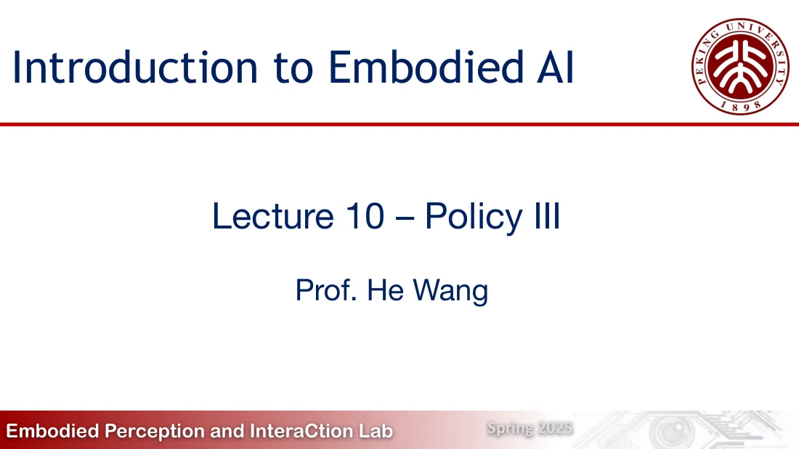
第10讲——策略 III
王鹤教授
具身感知与交互实验室｜2025年春季
Lecture 10 · PDF p2
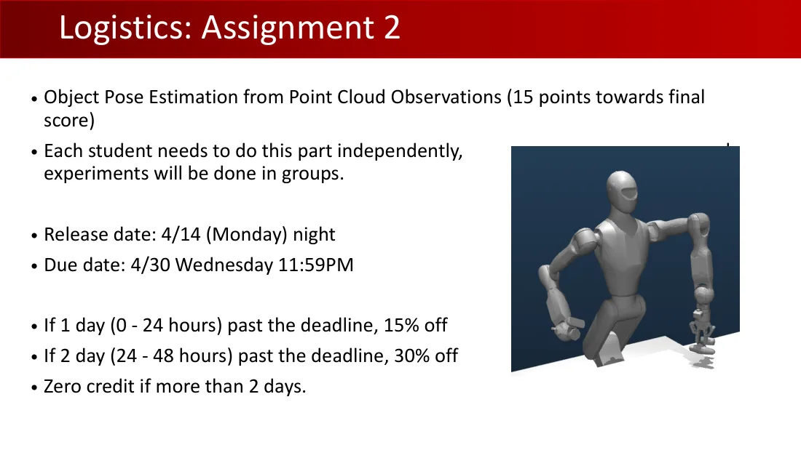
- 根据点云观测估计物体位姿（计入期末总成绩的15分）。
- 这一部分每位学生需要独立完成，真实实验分组完成。
- 发布时间：4月14日（星期一）晚。
- 截止时间：4月30日星期三23:59。
- 超过截止时间1天（0—24小时），扣15%。
- 超过截止时间2天（24—48小时），扣30%。
- 超过2天，计零分。
Lecture 10 · PDF p3
| 类型 | 日期与时间 | 主题 | 内容 |
|---|---|---|---|
| 授课 | 2025年4月28日，星期一，15:10 | 机器人任务 I | 腿式机器人运动 |
| 作业 | 2025年4月30日，星期三 | 发布作业3 | [作业3] |
| 截止 | 2025年4月30日，星期三，23:59 | 作业2截止 | |
| 授课 | 2025年5月12日，星期一，15:10 | 机器人任务 II | 机器人夹爪操作与灵巧手操作 |
| 截止 | 2025年5月14日，星期三，23:59 | 作业3截止 | |
| 授课 | 2025年5月19日，星期一，15:10 | 具身智能中的多模态大语言模型 I | 预训练大模型（CLIP、GPT-4v/4o及其他多模态大语言模型） |
| 授课 | 2025年5月26日，星期一，15:10 | 具身智能中的多模态大语言模型 II | 模块化通用操作系统与端到端视觉—语言—动作（VLA）模型 |
| 实验 | 2025年6月2日，星期一，15:10 | 真实世界实验 | 真实世界实验（在北大—银河通用联合实验室） |
Lecture 10 · PDF p4
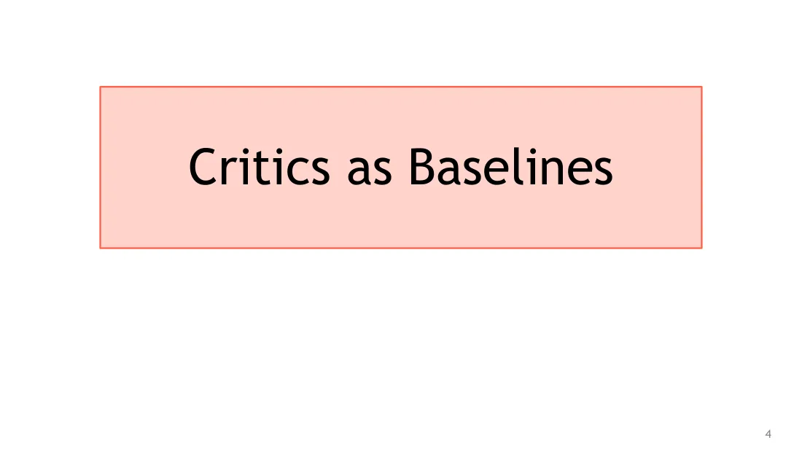
Lecture 10 · PDF p5
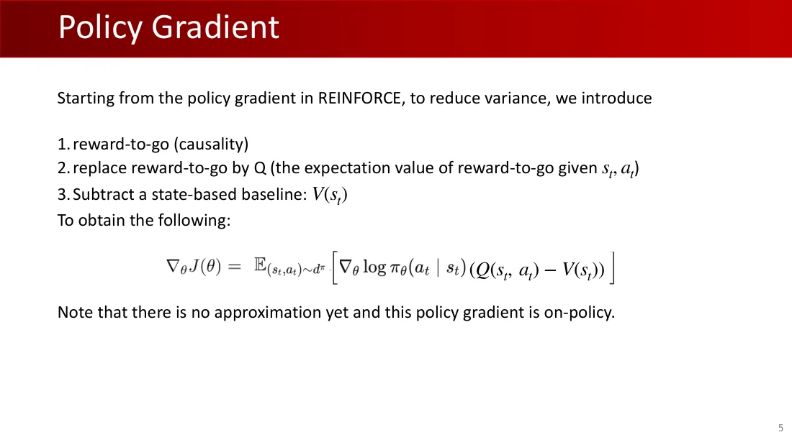
从REINFORCE中的策略梯度出发，为了降低方差，我们引入：
- 从当前时刻开始的回报（因果性）。
- 用Q替代未来回报（给定sₜ、aₜ时未来回报的期望值）。
- 减去基于状态的基线：V(sₜ)。
得到以下结果：
$\nabla_\theta J(\theta)=\mathbb E_{(s_t,a_t)\sim d^\pi}[\nabla_\theta\log\pi_\theta(a_t\mid s_t)(Q(s_t,a_t)-V(s_t))]$。
注意，目前还没有使用任何近似，而且这一策略梯度是同策略的。
Lecture 10 · PDF p6
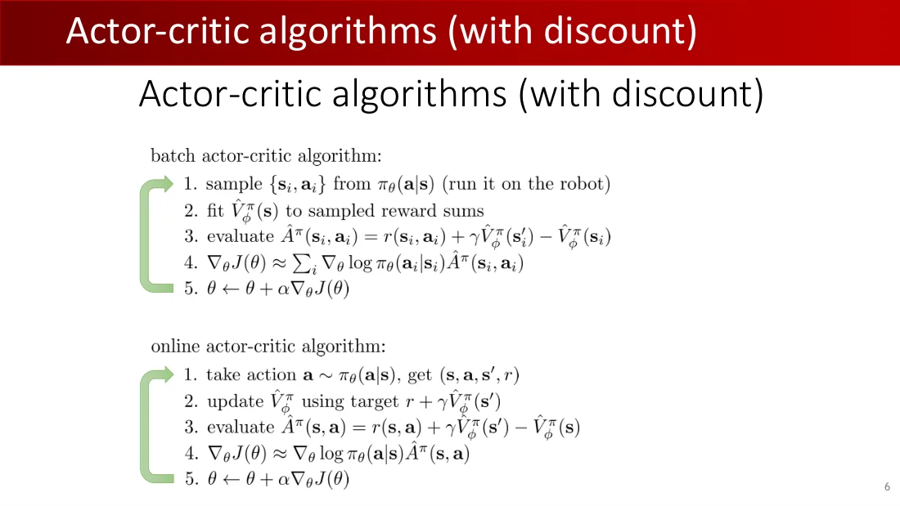
批次式行动者—评价者算法（带折扣）
- 用当前策略$\pi_\theta(a\mid s)$采样$\{s_i,a_i\}$。
- 用采样得到的奖励和拟合$\hat V^\pi_\phi(s)$。
- 评估$\hat A^\pi(s_i,a_i)=r(s_i,a_i)+\gamma\hat V^\pi_\phi(s_i\prime)-\hat V^\pi_\phi(s_i)$。
- 评估$\nabla_\theta J(\theta)\approx\sum_i\nabla_\theta\log\pi_\theta(a_i\mid s_i)\hat A^\pi(s_i,a_i)$。
- 更新$\theta\leftarrow\theta+\alpha\nabla_\theta J(\theta)$。
在线行动者—评价者算法（带折扣）
- 采样动作$a\sim\pi_\theta(a\mid s)$，得到$(s,a,s\prime,r)$。
- 更新$\hat V^\pi_\phi$，使用目标$y=r+ \gamma\hat V^\pi_\phi(s\prime)$。
- 评估$\hat A^\pi(s,a)=r+ \gamma\hat V^\pi_\phi(s\prime)-\hat V^\pi_\phi(s)$。
- 评估$\nabla_\theta J(\theta)\approx\nabla_\theta\log\pi_\theta(a\mid s)\hat A^\pi(s,a)$。
- 更新$\theta\leftarrow\theta+\alpha\nabla_\theta J(\theta)$。
Lecture 10 · PDF p7
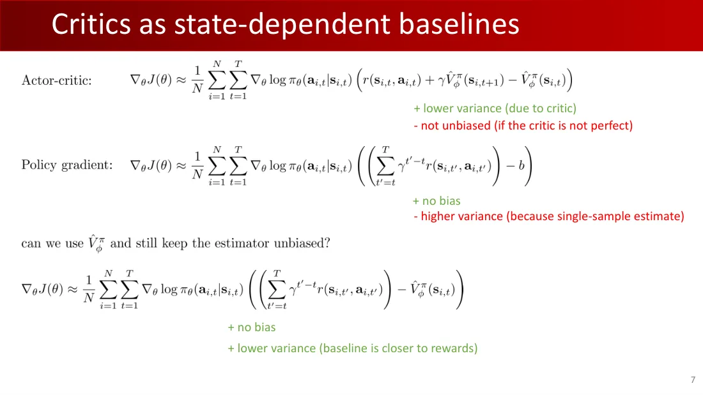
$\nabla_\theta J(\theta)\approx\frac1N\sum_i\sum_t\nabla_\theta\log\pi_\theta(a_{i,t}\mid s_{i,t})(r(s_{i,t},a_{i,t})+\gamma\hat V^\pi_\phi(s_{i,t+1})-\hat V^\pi_\phi(s_{i,t}))$。
- 优点：方差更低（得益于评价者）。
- 缺点：有偏（如果评价者并不完美）。
$\nabla_\theta J(\theta)\approx\frac1N\sum_i\sum_t\nabla_\theta\log\pi_\theta(a_{i,t}\mid s_{i,t})\left(\sum_{t\prime=t}^T\gamma^{t\prime-t}r(s_{i,t\prime},a_{i,t\prime})-b\right)$。
- 优点：没有偏差。
- 缺点：方差更高（因为是单样本估计）。
能使用V，同时仍然无偏吗？
$\nabla_\theta J(\theta)\approx\frac1N\sum_i\sum_t\nabla_\theta\log\pi_\theta(a_{i,t}\mid s_{i,t})\left(\sum_{t\prime=t}^T\gamma^{t\prime-t}r(s_{i,t\prime},a_{i,t\prime})-\hat V^\pi_\phi(s_{i,t})\right)$。
- 没有偏差。
- 方差更低（基线更接近奖励）。
$Q^\pi(s_t,a_t)=\sum_{t\prime=t}^T\mathbb E_{\pi_\theta}[r(s_{t\prime},a_{t\prime})\mid s_t,a_t]$；$V^\pi(s_t)=\mathbb E_{a_t\sim\pi_\theta(a_t\mid s_t)}[Q^\pi(s_t,a_t)]$；$A^\pi(s_t,a_t)=Q^\pi(s_t,a_t)-V^\pi(s_t)$。
Lecture 10 · PDF p8
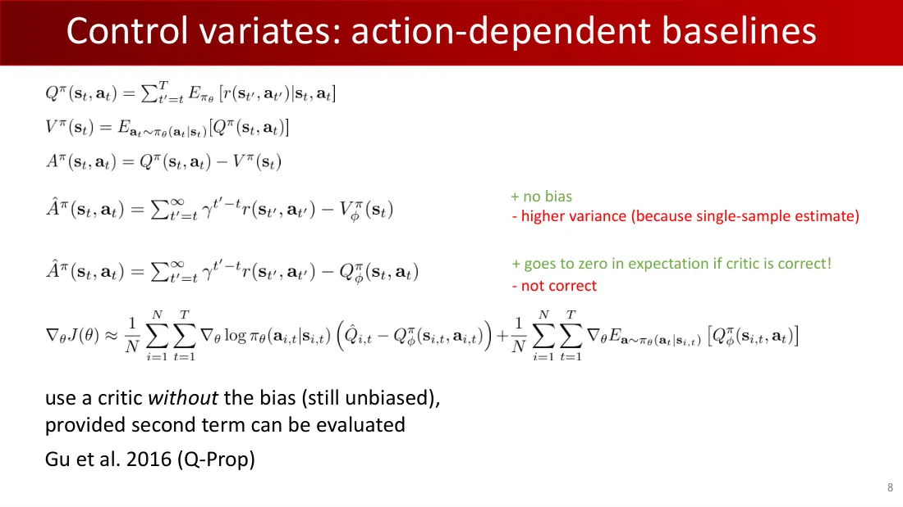
$Q^\pi(s_t,a_t)=\sum_{t\prime=t}^T\mathbb E_\pi[r(s_{t\prime},a_{t\prime})\mid s_t,a_t]$。
$V^\pi(s_t)=\sum_{t\prime=t}^T\mathbb E_\pi[r(s_{t\prime},a_{t\prime})\mid s_t]=\mathbb E_{a_t\sim\pi(a_t\mid s_t)}[Q^\pi(s_t,a_t)]$。
$A^\pi(s_t,a_t)=Q^\pi(s_t,a_t)-V^\pi(s_t)$。
$\hat A^\pi(s_t,a_t)=\sum_{t\prime=t}^\infty\gamma^{t\prime-t}r(s_{t\prime},a_{t\prime})-\hat V^\pi_\phi(s_t)$。
- 优点：没有偏差。
- 缺点：方差更高（因为是单样本估计）。
$\hat A^\pi(s_t,a_t)=\sum_{t\prime=t}^\infty\gamma^{t\prime-t}r(s_{t\prime},a_{t\prime})-\hat Q^\pi_\phi(s_t,a_t)$。
- 优点：如果评价者正确，期望趋于零！
- 缺点：并不正确。
$\nabla_\theta J(\theta)\approx\frac1N\sum_{i=1}^N\sum_{t=1}^T\nabla_\theta\log\pi_\theta(a_{i,t}\mid s_{i,t})(\hat Q_{i,t}-\hat Q^\pi_\phi(s_{i,t},a_{i,t}))+\frac1N\sum_{i=1}^N\sum_{t=1}^T\nabla_\theta\mathbb E_{a\sim\pi_\theta(a\mid s_{i,t})}[\hat Q^\pi_\phi(s_{i,t},a)]$。
使用评价者而不引入偏差（仍然无偏），前提是能够计算第二项。
Gu等，2016（Q-Prop）。
Lecture 10 · PDF p9
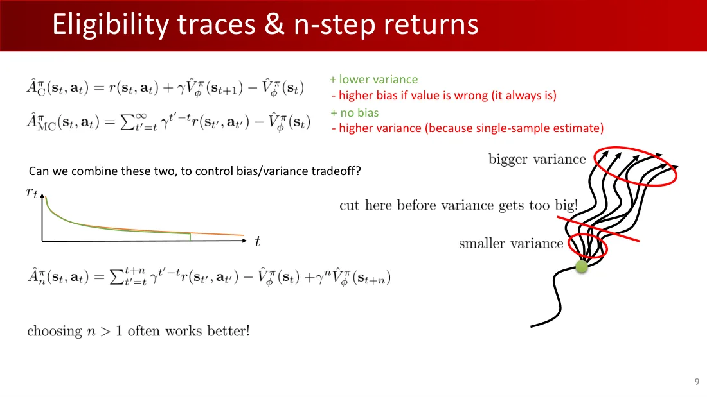
$\hat A_C^\pi(s_t,a_t)=r(s_t,a_t)+\gamma\hat V^\pi_\phi(s_{t+1})-\hat V^\pi_\phi(s_t)$。
- 优点：方差较低。
- 缺点：价值函数错误时偏差较高（它总会有误差）。
$\hat A_{MC}^\pi(s_t,a_t)=\sum_{t\prime=t}^\infty\gamma^{t\prime-t}r(s_{t\prime},a_{t\prime})-\hat V^\pi_\phi(s_t)$。
- 优点：没有偏差。
- 缺点：方差更高（因为是单样本估计）。
能将二者结合，以控制偏差与方差的权衡吗？
rₜ；t。
$\hat A^{\pi,(n)}(s_t,a_t)=\sum_{t\prime=t}^{t+n}\gamma^{t\prime-t}r(s_{t\prime},a_{t\prime})+\gamma^n\hat V^\pi_\phi(s_{t+n})-\hat V^\pi_\phi(s_t)$。
选择n>1往往效果更好！
较大的方差。方差变得太大之前在这里截断！较小的方差。
Lecture 10 · PDF p10

$\hat A^{\pi,(n)}(s_t,a_t)=\sum_{t\prime=t}^{t+n}\gamma^{t\prime-t}r(s_{t\prime},a_{t\prime})+\gamma^n\hat V^\pi_\phi(s_{t+n})-\hat V^\pi_\phi(s_t)$。
一定要只选择一个n吗？
同时在每个位置截断！
$\hat A^\pi_{GAE}(s_t,a_t)=\sum_{n=1}^\infty w_n\hat A^{\pi,(n)}(s_t,a_t)$。
n步回报的加权组合。
如何加权？更偏好较早截断（方差更小）。指数衰减。
$w_n\propto\lambda^{n-1}$。
$\hat A^\pi_{GAE}(s_t,a_t)=r(s_t,a_t)+\gamma((1-\lambda)\hat V^\pi_\phi(s_{t+1})+\lambda(r(s_{t+1},a_{t+1})+\gamma((1-\lambda)\hat V^\pi_\phi(s_{t+2})+\lambda(r(s_{t+2},a_{t+2})+\cdots))))$。
$\hat A^\pi_{GAE}(s_t,a_t)=\sum_{t\prime=t}^\infty(\gamma\lambda)^{t\prime-t}\delta_{t\prime}$；$\delta_t=r(s_t,a_t)+\gamma\hat V^\pi_\phi(s_{t+1})-\hat V^\pi_\phi(s_t)$。
效果与折扣相似！还记得这个吗？
$\nabla_\theta J(\theta)\approx\frac1N\sum_i\sum_t\nabla_\theta\log\pi_\theta(a_{i,t}\mid s_{i,t})\left(\sum_{t\prime=t}^T\gamma^{t\prime-t}r(s_{i,t\prime},a_{i,t\prime})\right)$。
折扣＝降低方差！
Schulman、Moritz、Levine、Jordan、Abbeel，2016。
Lecture 10 · PDF p11
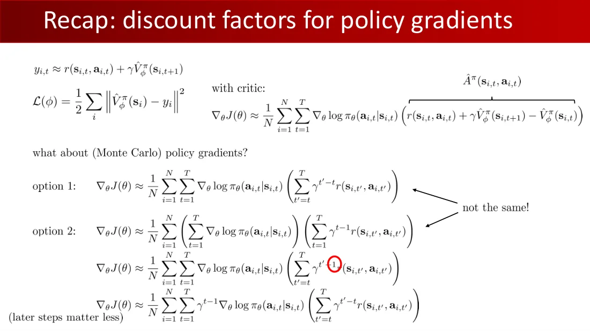
$y_{i,t}\approx r(s_{i,t},a_{i,t})+\gamma\hat V^\pi_\phi(s_{i,t+1})$。
$L(\phi)=\frac12\sum_i\|\hat V^\pi_\phi(s_i)-y_i\|^2$。
使用评价者：
$\nabla_\theta J(\theta)\approx\frac1N\sum_i\sum_t\nabla_\theta\log\pi_\theta(a_{i,t}\mid s_{i,t})(r(s_{i,t},a_{i,t})+\gamma\hat V^\pi_\phi(s_{i,t+1})-\hat V^\pi_\phi(s_{i,t}))$。
Âπ(sᵢ,ₜ,aᵢ,ₜ)。
（蒙特卡罗）策略梯度呢？
选项1
$\nabla_\theta J(\theta)\approx\frac1N\sum_i\sum_t\nabla_\theta\log\pi_\theta(a_{i,t}\mid s_{i,t})\left(\sum_{t\prime=t}^T\gamma^{t\prime-t}r(s_{i,t\prime},a_{i,t\prime})\right)$。
并不相同！
选项2
$\nabla_\theta J(\theta)\approx\frac1N\sum_i(\sum_t\nabla_\theta\log\pi_\theta(a_{i,t}\mid s_{i,t}))(\sum_{t\prime=1}^T\gamma^{t\prime-1}r(s_{i,t\prime},a_{i,t\prime}))$。
$\nabla_\theta J(\theta)\approx\frac1N\sum_i\sum_t\nabla_\theta\log\pi_\theta(a_{i,t}\mid s_{i,t})\left(\sum_{t\prime=t}^T\gamma^{t\prime-1}r(s_{i,t\prime},a_{i,t\prime})\right)$。
$\nabla_\theta J(\theta)\approx\frac1N\sum_i\sum_t\gamma^{t-1}\nabla_\theta\log\pi_\theta(a_{i,t}\mid s_{i,t})(\sum_{t\prime=t}^T\gamma^{t\prime-t}r(s_{i,t\prime},a_{i,t\prime}))$。
后面的步骤较不重要。
Lecture 10 · PDF p12
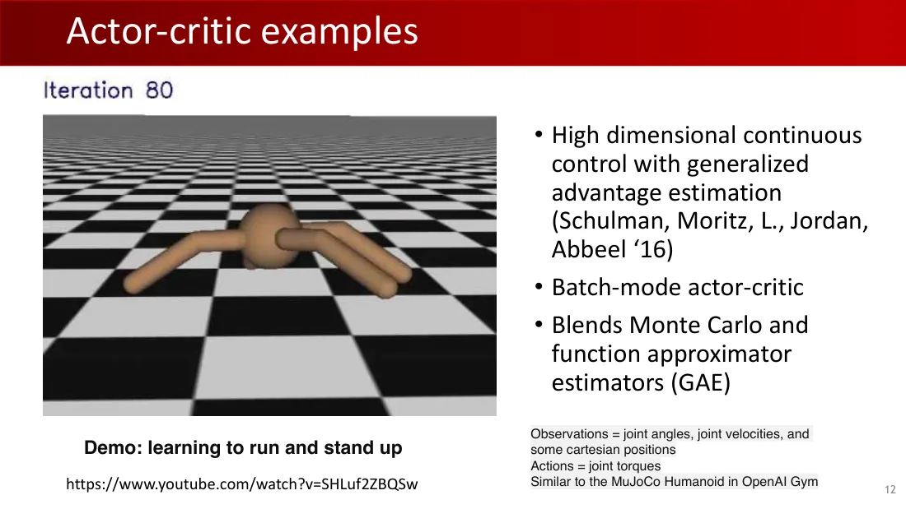
- 使用广义优势估计进行高维连续控制（Schulman、Moritz、L.、Jordan、Abbeel，2016）。
- 批次式行动者—评价者。
- 融合蒙特卡罗估计器与函数逼近估计器（GAE）。
第80次迭代。
演示：学习奔跑与站起
https://www.youtube.com/watch?v=SHLuf2ZBQSw
观测＝关节角度、关节速度，以及部分笛卡尔坐标位置。动作＝关节力矩。与OpenAI Gym中的MuJoCo Humanoid类似。
Lecture 10 · PDF p13
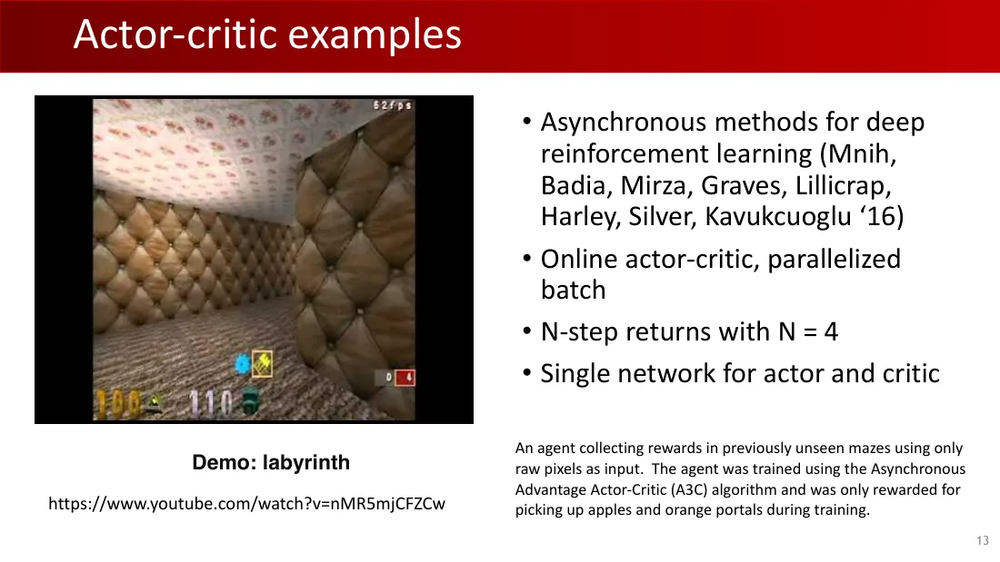
- 深度强化学习的异步方法（Mnih、Badia、Mirza、Graves、Lillicrap、Harley、Silver、Kavukcuoglu，2016）。
- 在线行动者—评价者，并行化批次。
- N步回报，N＝4。
- 行动者与评价者使用一个网络。
演示：迷宫
https://www.youtube.com/watch?v=nMR5mjCFZCw
一个智能体仅以原始像素为输入，在从未见过的迷宫中收集奖励。智能体使用异步优势行动者—评价者（A3C）算法训练，训练中仅在拾取苹果和橙色传送门时获得奖励。
62帧／秒；100；110；9。
Lecture 10 · PDF p14
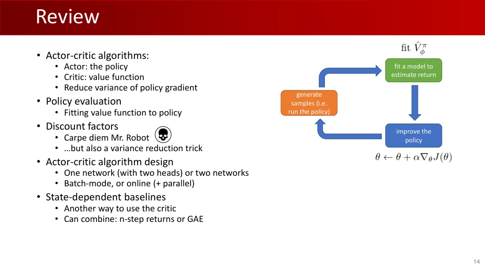
- 行动者—评价者算法：
- 行动者：策略。
- 评价者：价值函数。
- 降低策略梯度的方差。
- 策略评估：
- 为策略拟合价值函数。
- 折扣因子：
- 机器人先生，抓住当下。
- ……也是一种降低方差的技巧。
- 行动者—评价者算法的设计：
- 一个网络（带两个输出头），或者两个网络。
- 批次模式，或者在线模式（加并行）。
- 依赖状态的基线：
- 使用评价者的另一种方式。
- 可以结合：n步回报或GAE。
生成样本（即执行策略） → 拟合模型以估计回报 → 改进策略。
Lecture 10 · PDF p15
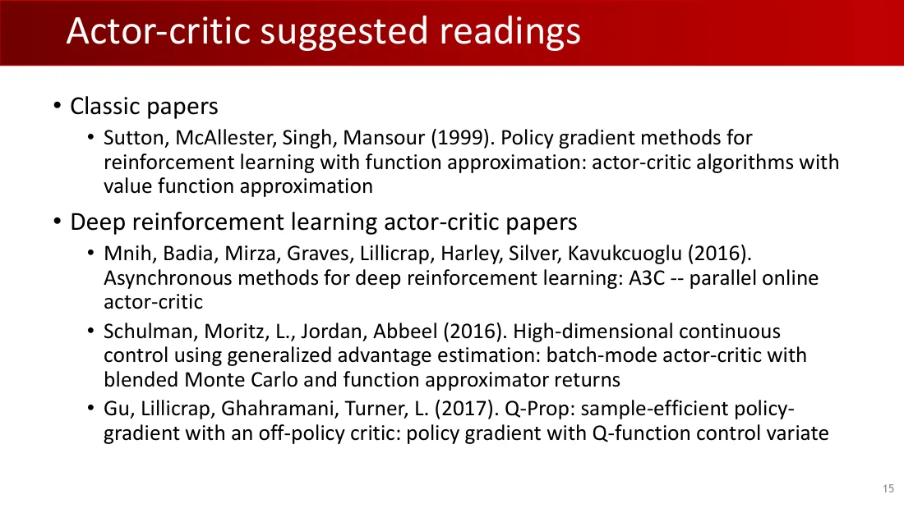
- 经典论文。
- Sutton、McAllester、Singh、Mansour（1999）。《采用函数逼近的强化学习策略梯度方法》（Policy gradient methods for reinforcement learning with function approximation）：使用价值函数逼近的行动者—评价者算法。
- 深度强化学习中的行动者—评价者论文。
- Mnih、Badia、Mirza、Graves、Lillicrap、Harley、Silver、Kavukcuoglu（2016）。《深度强化学习的异步方法》（Asynchronous methods for deep reinforcement learning）：A3C——并行在线行动者—评价者。
- Schulman、Moritz、L.、Jordan、Abbeel（2016）。《使用广义优势估计的高维连续控制》（High-dimensional continuous control using generalized advantage estimation）：融合蒙特卡罗回报与函数逼近回报的批次式行动者—评价者。
- Gu、Lillicrap、Ghahramani、Turner、L.（2017）。《Q-Prop：借助异策略评价者的高样本效率策略梯度》（Q-Prop: sample-efficient policy-gradient with an off-policy critic）：使用Q函数控制变量的策略梯度。
Lecture 10 · PDF p16
Lecture 10 · PDF p17
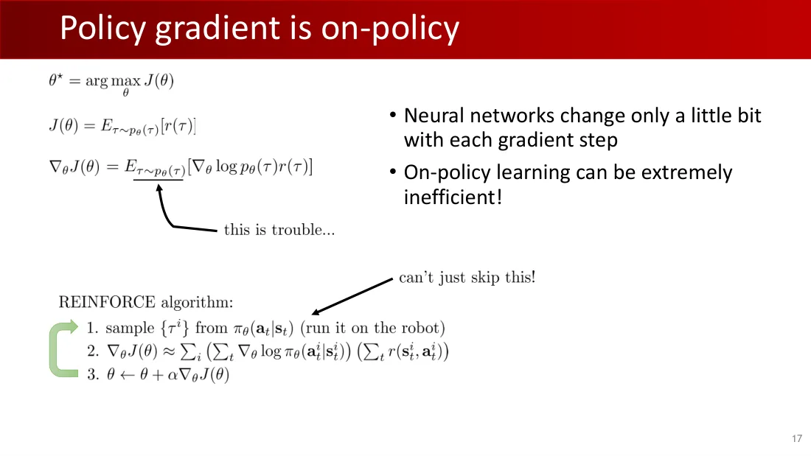
$\theta^*=\arg\max_\theta J(\theta)$；$J(\theta)=\mathbb E_{\tau\sim p_\theta(\tau)}[r(\tau)]$。
$\nabla_\theta J(\theta)\approx\frac1N\sum_{i=1}^N\nabla_\theta\log p_\theta(\tau)r(\tau)$。
问题：样本依赖当前策略。
- 神经网络每次梯度更新只发生一点变化。
- 同策略学习可能极其低效！
REINFORCE算法
- 从$\pi_\theta(a_t\mid s_t)$采样$\{\tau^i\}$（执行该策略）。
- $\nabla_\theta J(\theta)\approx\frac1N\sum_{i=1}^N(\sum_{t=1}^T\nabla_\theta\log\pi_\theta(a_{i,t}\mid s_{i,t}))(\sum_{t=1}^T r(s_{i,t},a_{i,t}))$。
- $\theta\leftarrow\theta+\alpha\nabla_\theta J(\theta)$。
机器人。
不能直接跳过采样。
Lecture 10 · PDF p18
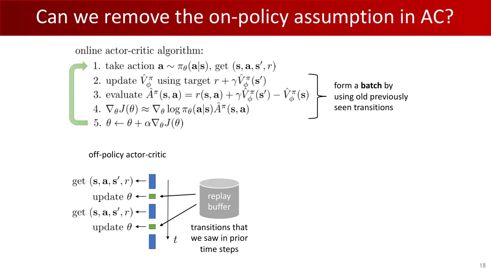
- 采样动作$a\sim\pi_\theta(a\mid s)$，得到$(s,a,s\prime,r)$。
- 更新$\hat V^\pi_\phi$，使用目标$y=r+ \gamma\hat V^\pi_\phi(s\prime)$。
- 评估$\hat A^\pi(s,a)=r+ \gamma\hat V^\pi_\phi(s\prime)-\hat V^\pi_\phi(s)$。
- 评估$\nabla_\theta J(\theta)\approx\nabla_\theta\log\pi_\theta(a\mid s)\hat A^\pi(s,a)$。
- 更新$\theta\leftarrow\theta+\alpha\nabla_\theta J(\theta)$。
如果把旧的转移组成一个批次呢？
异策略行动者—评价者
获取样本。储存到回放缓冲区。使用前面步骤产生的样本。
Lecture 10 · PDF p19
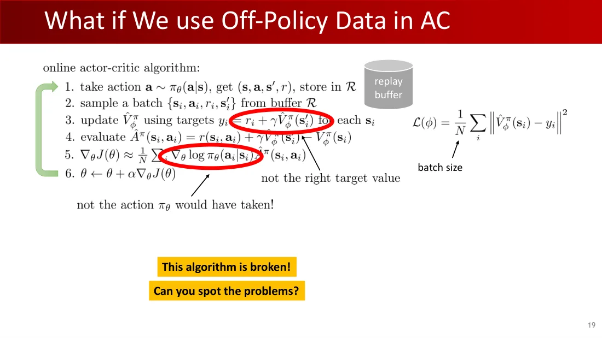
在线行动者—评价者算法
- 采样动作$a\sim\pi_\theta(a\mid s)$，得到$(s,a,s\prime,r)$，储存在回放缓冲区。
- 从回放缓冲区采样一批$(s_i,a_i,s_i\prime,r_i)$。
- 更新$\hat V^\pi_\phi$，目标$y_i=r_i+\gamma\hat V^\pi_\phi(s_i\prime)$。
- 评估$\hat A^\pi(s_i,a_i)=r_i+\gamma\hat V^\pi_\phi(s_i\prime)-\hat V^\pi_\phi(s_i)$。
- 评估$\nabla_\theta J(\theta)\approx\frac1N\sum_i\nabla_\theta\log\pi_\theta(a_i\mid s_i)\hat A^\pi(s_i,a_i)$。
- 更新$\theta\leftarrow\theta+\alpha\nabla_\theta J(\theta)$。
回放缓冲区R。
$L(\phi)=\frac1N\sum_i(\hat V^\pi_\phi(s_i)-y_i)^2$；$y_i=r_i+\gamma\hat V^\pi_\phi(s_i\prime)$。
批次大小。不是正确的目标值。不是πθ会采取的动作！
这个算法有问题！能找出问题吗？
Lecture 10 · PDF p20
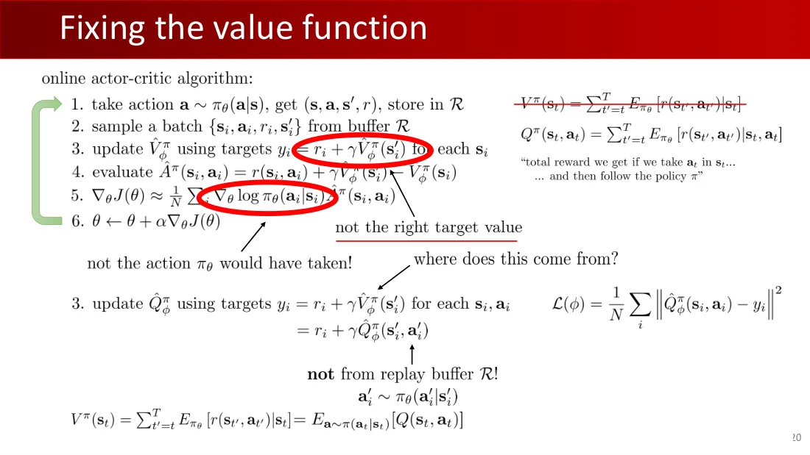
- 采样动作$a\sim\pi_\theta(a\mid s)$，得到$(s,a,s\prime,r)$，储存在回放缓冲区。
- 从回放缓冲区采样一批$(s_i,a_i,s_i\prime,r_i)$。
- 更新$\hat V^\pi_\phi$，目标$y_i=r_i+\gamma\hat V^\pi_\phi(s_i\prime)$。
- 评估$\hat A^\pi(s_i,a_i)=r_i+\gamma\hat V^\pi_\phi(s_i\prime)-\hat V^\pi_\phi(s_i)$。
- 评估$\nabla_\theta J(\theta)\approx\frac1N\sum_i\nabla_\theta\log\pi_\theta(a_i\mid s_i)\hat A^\pi(s_i,a_i)$。
- 更新$\theta\leftarrow\theta+\alpha\nabla_\theta J(\theta)$。
$V^\pi(s_t)=\sum_{t\prime=t}^T\mathbb E_\pi[r(s_{t\prime},a_{t\prime})\mid s_t]=\mathbb E_{a_t\sim\pi(a_t\mid s_t)}[Q^\pi(s_t,a_t)]$。
总奖励，从状态s开始。
错了！
$Q^\pi(s_t,a_t)=\sum_{t\prime=t}^T\mathbb E_\pi[r(s_{t\prime},a_{t\prime})\mid s_t,a_t]$。
采取动作a之后遵循策略π的总奖励。
$V^\pi(s)=\mathbb E_{a\sim\pi(a\mid s)}[Q^\pi(s,a)]$。
更新Q函数。
$y_i=r_i+\gamma V^\pi(s_i\prime)=r_i+\gamma Q^\pi(s_i\prime,a_i\prime)$，$a_i\prime\sim\pi_\theta(a_i\prime\mid s_i\prime)$。
从当前策略采样动作，不用缓冲区中的动作。
$L(\phi)=\frac1N\sum_i(\hat Q^\pi_\phi(s_i,a_i)-y_i)^2$；$y_i=r_i+\gamma\hat Q^\pi_\phi(s_i\prime,a_i\prime)$。
不是πθ会采取的动作！不是正确的目标值。这来自哪里？不来自回放缓冲区R！
Lecture 10 · PDF p21
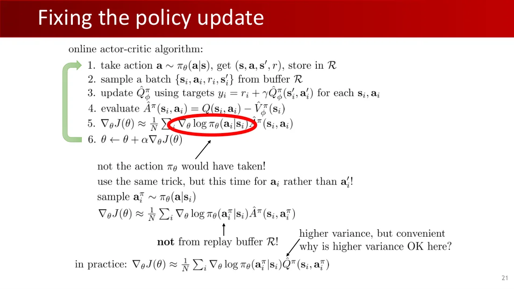
- 采样动作$a\sim\pi_\theta(a\mid s)$，得到$(s,a,s\prime,r)$，储存在回放缓冲区。
- 从回放缓冲区采样一批$(s_i,a_i,s_i\prime,r_i)$。
- 更新$\hat Q^\pi_\phi$，目标$y_i=r_i+\gamma\hat Q^\pi_\phi(s_i\prime,a_i\prime)$，其中$a_i\prime\sim\pi_\theta(a_i\prime\mid s_i\prime)$。
- 评估$\hat A^\pi(s_i,a_i)=\hat Q^\pi_\phi(s_i,a_i)-\hat V^\pi_\phi(s_i)$。
- 评估$\nabla_\theta J(\theta)\approx\frac1N\sum_i\nabla_\theta\log\pi_\theta(a_i\mid s_i)\hat A^\pi(s_i,a_i)$。
- 更新$\theta\leftarrow\theta+\alpha\nabla_\theta J(\theta)$。
不是当前策略产生的动作。
现在对aᵢ使用同样的技巧，而不是对aᵢ′！
采样$a_i\prime\prime\sim\pi_\theta(a_i\prime\prime\mid s_i)$。
$\nabla_\theta J(\theta)\approx\frac1N\sum_i\nabla_\theta\log\pi_\theta(a_i\prime\prime\mid s_i)\hat A^\pi(s_i,a_i\prime\prime)$。
从当前策略采样，不使用缓冲区中的动作。
方差更高，但更方便。为什么这里较高的方差可以接受？
实践中：$\nabla_\theta J(\theta)\approx\frac1N\sum_i\nabla_\theta\log\pi_\theta(a_i\prime\prime\mid s_i)\hat Q^\pi_\phi(s_i,a_i\prime\prime)$。
Lecture 10 · PDF p22
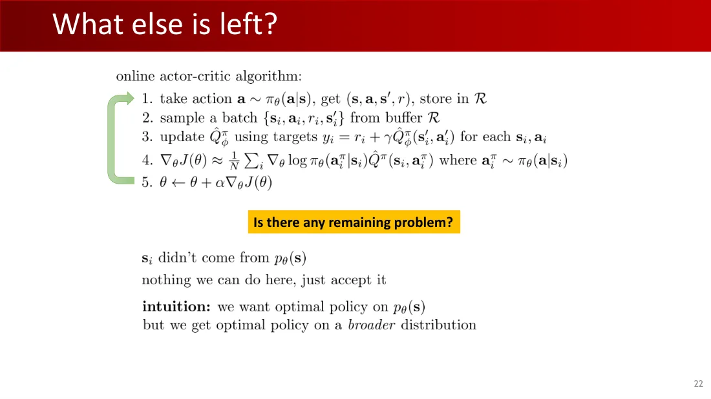
- 采样动作$a\sim\pi_\theta(a\mid s)$，得到$(s,a,s\prime,r)$，储存在回放缓冲区。
- 从回放缓冲区采样一批$(s_i,a_i,s_i\prime,r_i)$。
- 更新$\hat Q^\pi_\phi$，目标$y_i=r_i+\gamma\hat Q^\pi_\phi(s_i\prime,a_i\prime)$，其中$a_i\prime\sim\pi_\theta(a_i\prime\mid s_i\prime)$。
- 采样$a_i\prime\prime\sim\pi_\theta(a_i\prime\prime\mid s_i)$。评估$\nabla_\theta J(\theta)\approx\frac1N\sum_i\nabla_\theta\log\pi_\theta(a_i\prime\prime\mid s_i)\hat Q^\pi_\phi(s_i,a_i\prime\prime)$。
- 更新$\theta\leftarrow\theta+\alpha\nabla_\theta J(\theta)$。
还有任何问题吗？
sᵢ并不来自pθ(s)。
对此我们无能为力，接受它吧。
直觉：我们想得到pθ(s)上的最优策略，却得到了更广泛分布上的最优策略。
Lecture 10 · PDF p23
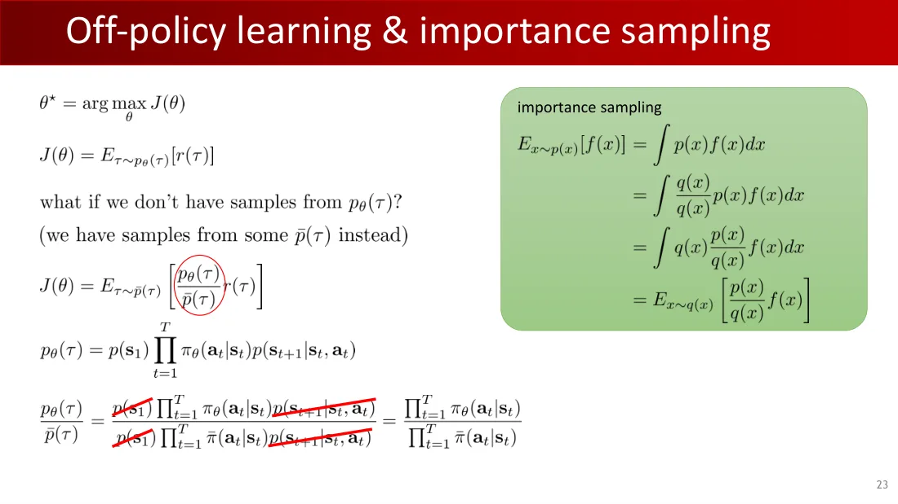
$\theta^*=\arg\max_\theta J(\theta)$；$J(\theta)=\mathbb E_{\tau\sim p_\theta(\tau)}[r(\tau)]$。
如果样本不来自pθ(τ)呢？改用pθ′(τ)。
重要性采样
$\mathbb E_{x\sim p(x)}[f(x)]=\int p(x)f(x)dx=\int q(x)\frac{p(x)}{q(x)}f(x)dx=\mathbb E_{x\sim q(x)}[\frac{p(x)}{q(x)}f(x)]$。
$J(\theta)=\mathbb E_{\tau\sim p_{\theta\prime}(\tau)}[\frac{p_\theta(\tau)}{p_{\theta\prime}(\tau)}r(\tau)]$。
$\frac{p_\theta(\tau)}{p_{\theta\prime}(\tau)}=\frac{p(s_1)\prod_{t=1}^T\pi_\theta(a_t\mid s_t)p(s_{t+1}\mid s_t,a_t)}{p(s_1)\prod_{t=1}^T\pi_{\theta\prime}(a_t\mid s_t)p(s_{t+1}\mid s_t,a_t)}=\prod_{t=1}^T\frac{\pi_\theta(a_t\mid s_t)}{\pi_{\theta\prime}(a_t\mid s_t)}$。
Lecture 10 · PDF p24
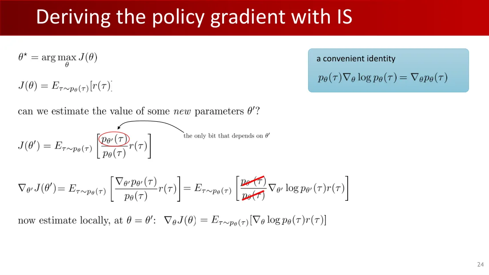
$\theta^*=\arg\max_\theta J(\theta)$；$J(\theta)=\mathbb E_{\tau\sim p_\theta(\tau)}[r(\tau)]$。
$J(\theta)=\mathbb E_{\tau\sim p_{\theta\prime}(\tau)}[\frac{p_\theta(\tau)}{p_{\theta\prime}(\tau)}r(\tau)]$。
$\nabla_\theta J(\theta)=\mathbb E_{\tau\sim p_{\theta\prime}(\tau)}[\frac{\nabla_\theta p_\theta(\tau)}{p_{\theta\prime}(\tau)}r(\tau)]=\mathbb E_{\tau\sim p_{\theta\prime}(\tau)}[\frac{p_\theta(\tau)}{p_{\theta\prime}(\tau)}\nabla_\theta\log p_\theta(\tau)r(\tau)]$。
一个方便的恒等式。
$p_\theta(\tau)\nabla_\theta\log p_\theta(\tau)=\nabla_\theta p_\theta(\tau)$。
如果$\theta=\theta\prime$：$\nabla_\theta J(\theta)=\mathbb E_{\tau\sim p_\theta}[\nabla_\theta\log p_\theta(\tau)r(\tau)]$。
只有概率比依赖θ′。
Lecture 10 · PDF p25
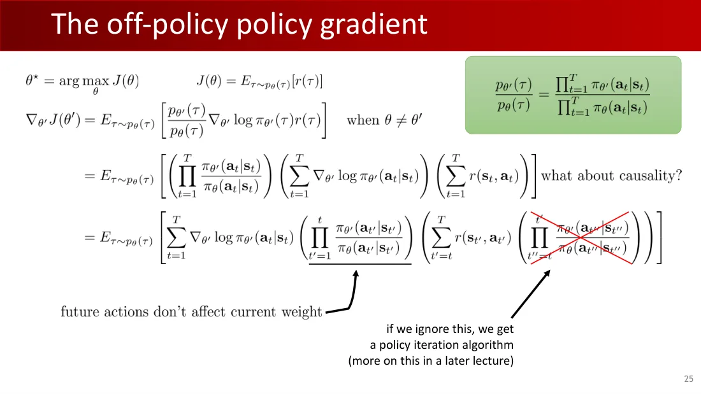
$\theta^*=\arg\max_\theta J(\theta)$；$J(\theta)=\mathbb E_{\tau\sim p_\theta(\tau)}[r(\tau)]$。
$\nabla_{\theta\prime}J(\theta\prime)=\mathbb E_{\tau\sim p_\theta}[\frac{p_{\theta\prime}(\tau)}{p_\theta(\tau)}\nabla_{\theta\prime}\log p_{\theta\prime}(\tau)r(\tau)]$，当$\theta\ne\theta\prime$。
$=\mathbb E_{\tau\sim p_\theta}[(\prod_{t=1}^T\frac{\pi_{\theta\prime}(a_t\mid s_t)}{\pi_\theta(a_t\mid s_t)})(\sum_{t=1}^T\nabla_{\theta\prime}\log\pi_{\theta\prime}(a_t\mid s_t))(\sum_{t=1}^Tr(s_t,a_t))]$。
$=\mathbb E_{\tau\sim p_\theta}[\sum_{t=1}^T\nabla_{\theta\prime}\log\pi_{\theta\prime}(a_t\mid s_t)(\prod_{t\prime=1}^{t}\frac{\pi_{\theta\prime}(a_{t\prime}\mid s_{t\prime})}{\pi_\theta(a_{t\prime}\mid s_{t\prime})})(\sum_{t\prime=t}^Tr(s_{t\prime},a_{t\prime}))(\prod_{t\prime\prime=t}^{t}\frac{\pi_{\theta\prime}(a_{t\prime\prime}\mid s_{t\prime\prime})}{\pi_\theta(a_{t\prime\prime}\mid s_{t\prime\prime})})]$。
未来的动作不影响当前权重。
如果忽略这一项，就得到策略迭代算法（后续课程会详细介绍）。
因果性呢？
$\frac{p_{\theta\prime}(\tau)}{p_\theta(\tau)}=\frac{\prod_{t=1}^T\pi_{\theta\prime}(a_t\mid s_t)}{\prod_{t=1}^T\pi_\theta(a_t\mid s_t)}$。
Lecture 10 · PDF p26
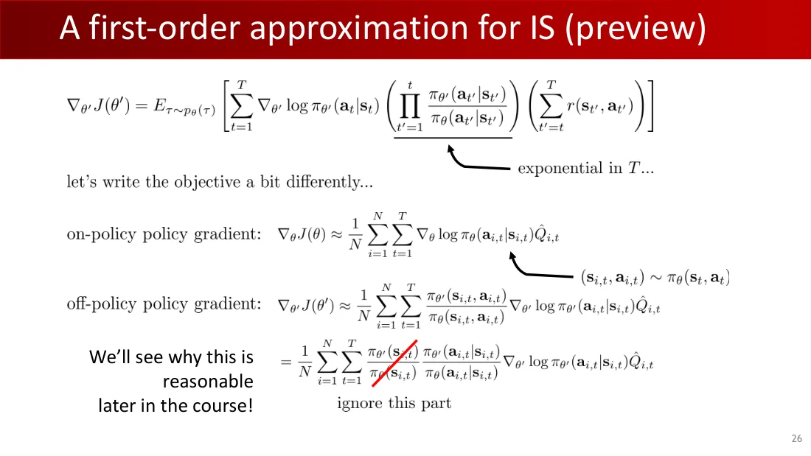
$\nabla_{\theta\prime}J(\theta\prime)=\mathbb E_{\tau\sim p_\theta}[\sum_{t=1}^T\nabla_{\theta\prime}\log\pi_{\theta\prime}(a_t\mid s_t)(\prod_{t\prime=1}^{t}\frac{\pi_{\theta\prime}(a_{t\prime}\mid s_{t\prime})}{\pi_\theta(a_{t\prime}\mid s_{t\prime})})(\sum_{t\prime=t}^Tr(s_{t\prime},a_{t\prime}))]$。
随T呈指数增长……
把目标写得稍有不同……
同策略的策略梯度：
$\nabla_\theta J(\theta)\approx\frac1N\sum_{i=1}^N\sum_{t=1}^T\nabla_\theta\log\pi_\theta(a_{i,t}\mid s_{i,t})\hat Q_{i,t}$。
$(s_{i,t},a_{i,t})\sim\pi_\theta(s_t,a_t)$。
异策略的策略梯度：
$\nabla_{\theta\prime}J(\theta\prime)\approx\frac1N\sum_i\sum_t\frac{\pi_{\theta\prime}(s_{i,t},a_{i,t})}{\pi_\theta(s_{i,t},a_{i,t})}\nabla_{\theta\prime}\log\pi_{\theta\prime}(a_{i,t}\mid s_{i,t})\hat Q_{i,t}=\frac1N\sum_i\sum_t\frac{\pi_{\theta\prime}(s_{i,t})\pi_{\theta\prime}(a_{i,t}\mid s_{i,t})}{\pi_\theta(s_{i,t})\pi_\theta(a_{i,t}\mid s_{i,t})}\nabla_{\theta\prime}\log\pi_{\theta\prime}(a_{i,t}\mid s_{i,t})\hat Q_{i,t}$。
忽略这一部分。稍后在课程中会看到为什么这是合理的！
Lecture 10 · PDF p27
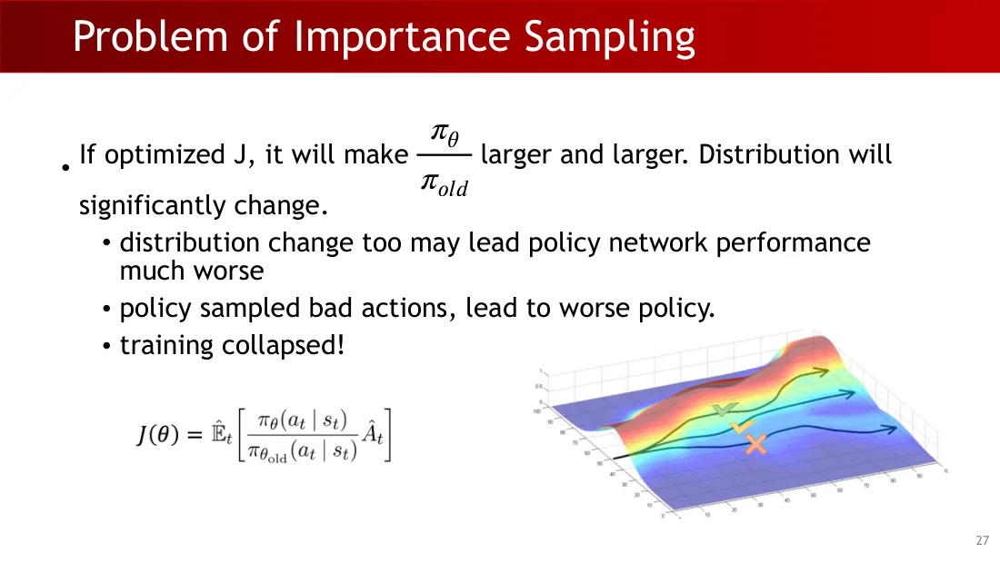
- 如果优化J，会使πθ/πold越来越大。分布会显著变化。
- 分布变化过大可能让策略网络表现变得糟糕得多。
- 策略采样到糟糕的动作，导致更差的策略。
- 训练崩溃！
$J(\theta)=\mathbb E_{(s_t,a_t)\sim\pi_{old}}[\frac{\pi_\theta(a_t\mid s_t)}{\pi_{old}(a_t\mid s_t)}A^{\pi_{old}}(s_t,a_t)]$。
Lecture 10 · PDF p28
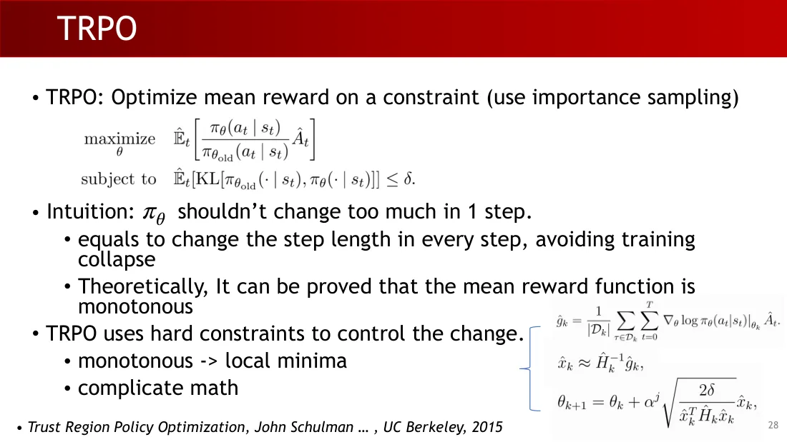
- TRPO：在约束条件下优化平均奖励（使用重要性采样）。
$\max_\theta\mathbb E_t[\frac{\pi_\theta(a_t\mid s_t)}{\pi_{\theta_{old}}(a_t\mid s_t)}\hat A_t]$，约束为$\mathbb E_t[D_{KL}(\pi_{\theta_{old}}(\cdot\mid s_t)\|\pi_\theta(\cdot\mid s_t))]\le\delta$。
- 直觉：πθ不应在一步内变化太大。
- 相当于每一步改变步长，避免训练崩溃。
- 理论上，可以证明平均奖励函数具有单调性。
- TRPO通过硬约束控制变化。
- 单调性 → 局部极小值。
- 数学复杂。
$\hat g_k=\frac1{|D_k|}\sum_{\tau\in D_k}\sum_{t=0}^T\nabla_\theta\log\pi_\theta(a_t\mid s_t)|_{\theta_k}\hat A_t$；$\hat x_k\approx\hat H_k^{-1}\hat g_k$；$\theta_{k+1}=\theta_k+\alpha^j\sqrt{\frac{2\delta}{\hat x_k^T\hat H_k\hat x_k}}\hat x_k$。
《信赖域策略优化》（Trust Region Policy Optimization），John Schulman等，加州大学伯克利分校，2015。
Lecture 10 · PDF p29
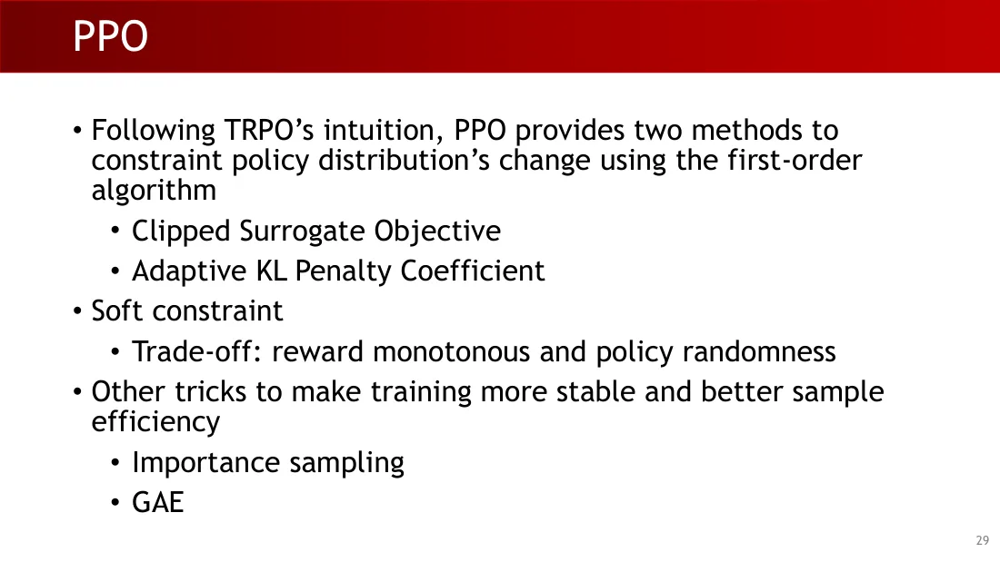
- 沿用TRPO的直觉，PPO提供两种使用一阶算法限制策略分布变化的方法。
- 剪裁代理目标。
- 自适应KL惩罚系数。
- 软约束。
- 权衡：奖励的单调性与策略的随机性。
- 其他技巧，让训练更稳定、样本效率更高。
- 重要性采样。
- GAE。
Lecture 10 · PDF p30
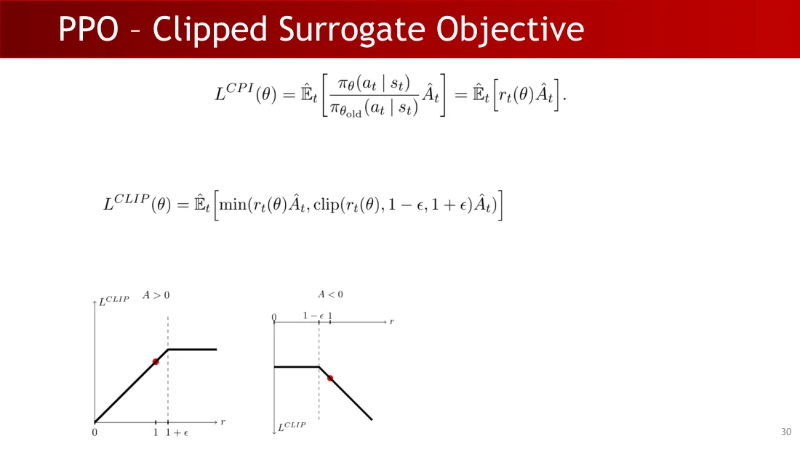
$r_t(\theta)=\frac{\pi_\theta(a_t\mid s_t)}{\pi_{\theta_{old}}(a_t\mid s_t)}$；$L^{CPI}(\theta)=\hat{\mathbb E}_t[r_t(\theta)\hat A_t]$；$L^{CLIP}(\theta)=\hat{\mathbb E}_t[\min(r_t(\theta)\hat A_t,\operatorname{clip}(r_t(\theta),1-\epsilon,1+\epsilon)\hat A_t)]$。
Â>0；Â<0。横轴：r。纵轴：L。1−ε；1；1+ε。
Lecture 10 · PDF p31
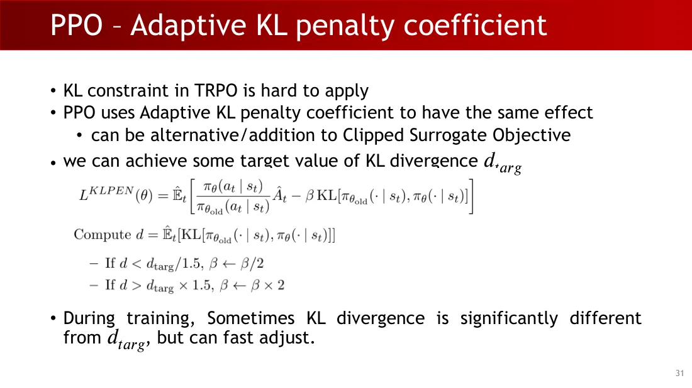
- TRPO中的KL约束很难应用。
- PPO使用自适应KL惩罚系数来达到同样的效果。
- 可替代剪裁代理目标，或与其结合。
- 可以达到某个KL散度目标值dₜₐᵣɡ。
$L^{KLPEN}(\theta)=\hat{\mathbb E}_t[r_t(\theta)\hat A_t-\beta D_{KL}(\pi_{\theta_{old}}(\cdot\mid s_t),\pi_\theta(\cdot\mid s_t))]$。
$d=\hat{\mathbb E}_t[D_{KL}(\pi_{\theta_{old}}(\cdot\mid s_t),\pi_\theta(\cdot\mid s_t))]$。
- 若$d
- 若$d>d_{targ}\times1.5$，$\beta\leftarrow\beta\times2$。
- 训练中，KL散度有时与dₜₐᵣɡ显著不同，但可以快速调整。
Lecture 10 · PDF p32
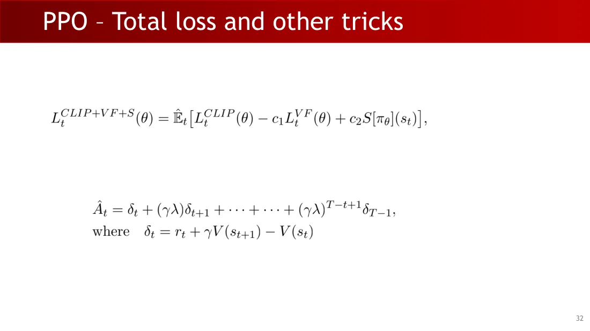
$L_t^{CLIP+VF+S}(\theta)=\hat{\mathbb E}_t[L_t^{CLIP}(\theta)-c_1L_t^{VF}(\theta)+c_2S[\pi_\theta](s_t)]$。
$\hat A_t=\delta_t+(\gamma\lambda)\delta_{t+1}+\cdots+(\gamma\lambda)^{T-t+1}\delta_{T-1}$；其中$\delta_t=r_t+\gamma V(s_{t+1})-V(s_t)$。
Lecture 10 · PDF p33
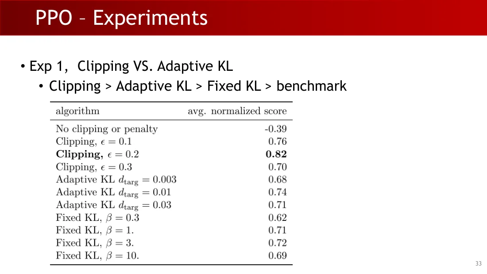
- 实验1：剪裁与自适应KL。
- 剪裁 > 自适应KL > 固定KL > 基准。
| 算法 | 平均归一化得分 |
|---|---|
| 无剪裁或惩罚 | −0.39 |
| 剪裁，ε＝0.1 | 0.76 |
| 剪裁，ε＝0.2 | 0.82 |
| 剪裁，ε＝0.3 | 0.70 |
| 自适应KL，dₜₐᵣɡ＝0.003 | 0.68 |
| 自适应KL，dₜₐᵣɡ＝0.01 | 0.74 |
| 自适应KL，dₜₐᵣɡ＝0.03 | 0.71 |
| 固定KL，β＝0.3 | 0.62 |
| 固定KL，β＝1 | 0.71 |
| 固定KL，β＝3 | 0.72 |
| 固定KL，β＝10 | 0.69 |
Lecture 10 · PDF p34
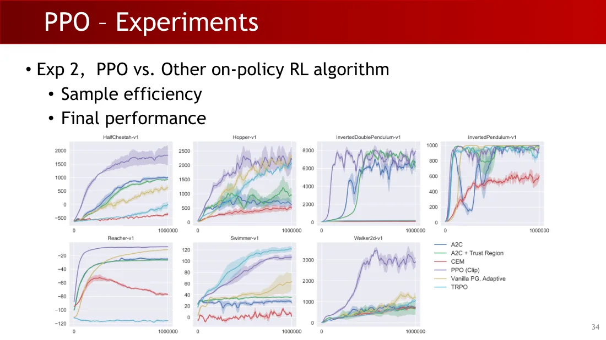
- 实验2：PPO与其他同策略强化学习算法。
- 样本效率。
- 最终性能。
任务：HalfCheetah-v1（半猎豹）、Hopper-v1（跳跃者）、InvertedDoublePendulum-v1（双倒立摆）、InvertedPendulum-v1（倒立摆）、Reacher-v1（到达目标）、Swimmer-v1（游泳者）、Walker2d-v1（二维步行者）。
算法：A2C、A2C＋信赖域、CEM、PPO剪裁、自适应KL的PPO、TRPO。
横轴：时间步数；纵轴：回合奖励。
Lecture 10 · PDF p35
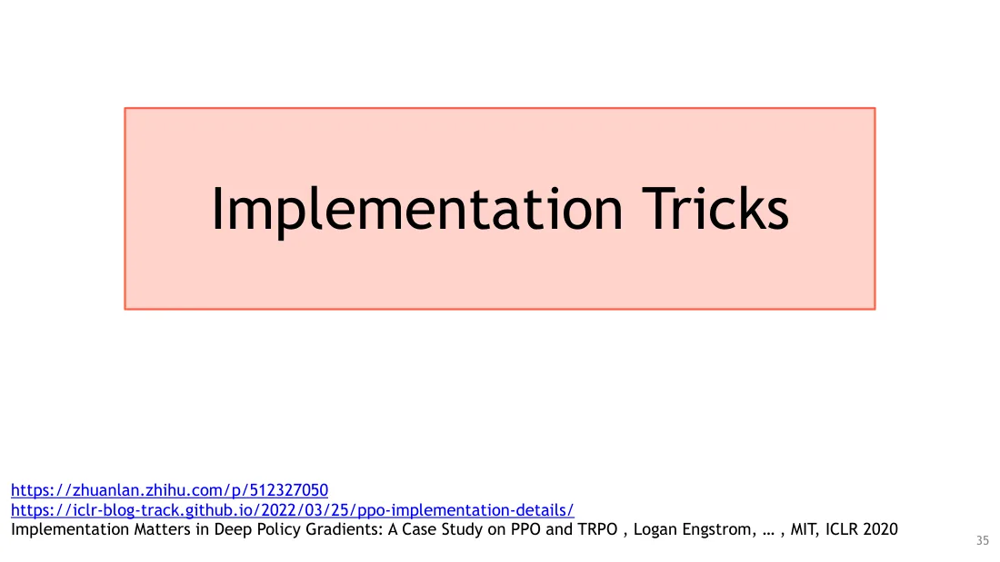
https://zhuanlan.zhihu.com/p/512327050
https://iclr-blog-track.github.io/2022/03/25/ppo-implementation-details/
《深度策略梯度中的实现至关重要：PPO与TRPO案例研究》（Implementation Matters in Deep Policy Gradients: A Case Study on PPO and TRPO），Logan Engstrom等，麻省理工学院，ICLR 2020。
Lecture 10 · PDF p36
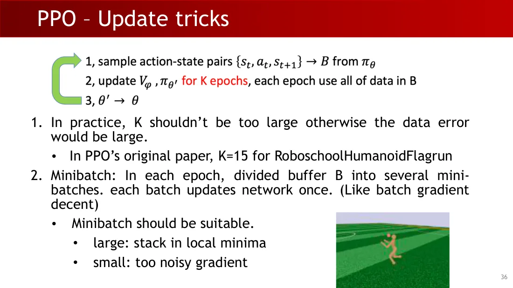
- 从$\pi_\theta$采样动作—状态对$\{s_t,a_t,s_{t+1}\}$，存入B。
- 更新$V_\phi$、$\pi_{\theta\prime}$，进行K个训练轮次，每轮使用B中的全部数据。
- $\theta\prime\to\theta$。
- 实际中K不应太大，否则数据误差会很大。
- PPO原论文中，RoboschoolHumanoidFlagrun使用K＝15。
- 小批次：在每一轮训练中，将缓冲区B分成若干小批次。每个批次更新网络一次（类似批次梯度下降）。
- 小批次大小应合适。
- 大：困在局部极小值。
- 小：梯度噪声过大。
- 小批次大小应合适。
Lecture 10 · PDF p37
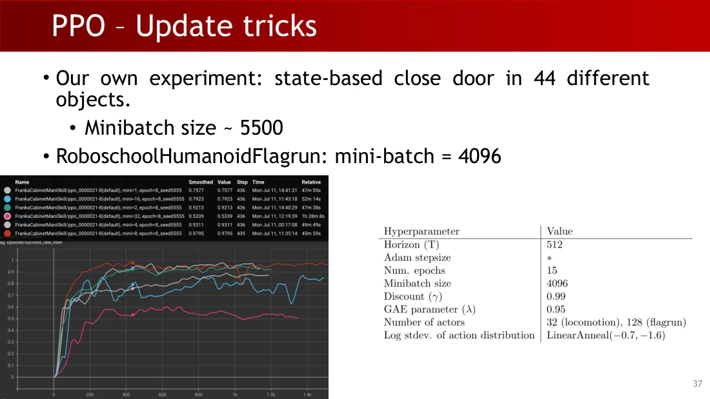
- 我们自己的实验：基于状态，在44个不同物体上关门。
- 小批次大小约5500。
- RoboschoolHumanoidFlagrun：小批次大小＝4096。
| 超参数 | 值 |
|---|---|
| 时域长度（T） | 512 |
| Adam步长 | * |
| 训练轮次 | 15 |
| 小批次大小 | 4096 |
| 折扣（γ） | 0.99 |
| GAE参数（λ） | 0.95 |
| 行动者数量 | 32（运动），128（旗帜奔跑） |
| 动作分布的对数标准差 | 线性退火（−0.7，−1.6） |
名称；平滑值；值；步数；时间；相对时间。
运行名称：FrankaCabinetManiSkill/ppo_0000021-8(default)，mini＝1、16、2、32、4、8，epoch＝8，seed＝5555。
| 小批次mini | 平滑值 | 值 | 步数 | 时间 | 相对时间 |
|---|---|---|---|---|---|
| 1 | 0.7577 | 0.7577 | 436 | 6月11日星期一，14:41:21 | 47分55秒 |
| 16 | 0.7923 | 0.7923 | 436 | 6月11日星期一，11:43:18 | 52分14秒 |
| 2 | 0.9213 | 0.9213 | 436 | 6月11日星期一，14:40:29 | 47分38秒 |
| 32 | 0.5339 | 0.5339 | 436 | 6月11日星期一，12:19:39 | 1小时28分8秒 |
| 4 | 0.9311 | 0.9311 | 436 | 6月11日星期一，00:17:08 | 49分49秒 |
| 8 | 0.9795 | 0.9795 | 435 | 6月11日星期一，11:35:14 | 45分59秒 |
标签：episode/success_rate_train（回合／训练成功率）。横轴：0、200、400、600、800、1千、1.2千、1.4千；纵轴：0、0.1、0.2、0.3、0.4、0.5、0.6、0.7、0.8、0.9、1。
Lecture 10 · PDF p38
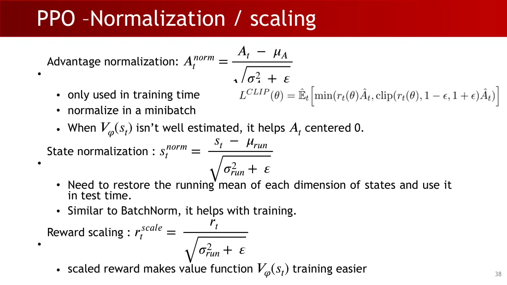
- 优势归一化：$A_t^{norm}=\frac{A_t-\mu_A}{\sqrt{\sigma_A^2+\epsilon}}$。
- 仅在训练期间使用。
- 在一个小批次内归一化。
- 当Vφ(sₜ)估计不准确时，有助于使Aₜ以0为中心。
- 状态归一化：$s_t^{norm}=\frac{s_t-\mu_{run}}{\sqrt{\sigma_{run}^2+\epsilon}}$。
- 需要保存状态每一维的运行均值，并在测试时使用。
- 与BatchNorm类似，有助于训练。
- 奖励缩放：$r_t^{scale}=\frac{r_t}{\sqrt{\sigma_{run}^2+\epsilon}}$。
- 缩放奖励让价值函数Vφ(sₜ)更容易训练。
$L^{CLIP}(\theta)=\hat{\mathbb E}_t[\min(r_t(\theta)\hat A_t,\operatorname{clip}(r_t(\theta),1-\epsilon,1+\epsilon)\hat A_t)]$。
Lecture 10 · PDF p39
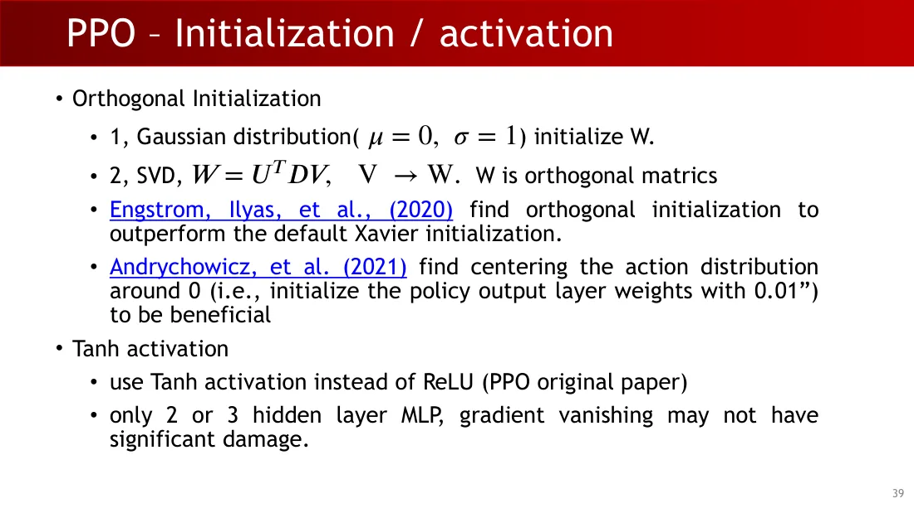
- 正交初始化。
- 1．用高斯分布（μ＝0，σ＝1）初始化W。
- 2．奇异值分解（SVD）：$W=U^TDV$，$V\to W$。W为正交矩阵。
- Engstrom、Ilyas等（2020）发现，正交初始化优于默认的Xavier初始化。
- Andrychowicz等（2021）发现，让动作分布以0为中心（即用0.01初始化策略输出层权重）是有益的。
- Tanh激活函数。
- 使用Tanh激活函数代替ReLU（PPO原论文）。
- 多层感知机（MLP）只有2或3个隐藏层，梯度消失可能不会造成明显损害。
Lecture 10 · PDF p40
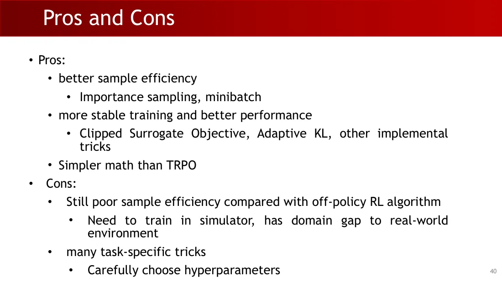
- 优点：
- 样本效率更好。
- 重要性采样、小批次。
- 训练更稳定、性能更好。
- 剪裁代理目标、自适应KL及其他实现技巧。
- 数学比TRPO更简单。
- 样本效率更好。
- 缺点：
- 与异策略强化学习算法相比，样本效率仍然较低。
- 需要在模拟器中训练，与真实环境有领域差距。
- 很多针对任务的技巧。
- 谨慎选择超参数。
- 与异策略强化学习算法相比，样本效率仍然较低。
Lecture 10 · PDF p41

- 强化学习算法。
- 无模型强化学习。
- 策略优化：策略梯度、A2C／A3C、PPO、TRPO；DDPG、TD3、SAC。
- Q学习：DDPG、TD3、SAC；DQN、C51、QR-DQN、HER。
- 基于模型的强化学习。
- 学习模型：世界模型（World Models）、I2A、MBMF、MBVE。
- 给定模型：AlphaZero。
- 无模型强化学习。
参考：https://spinningup.openai.com/en/latest/index.html
Lecture 10 · PDF p42

OpenAI强化学习教程。
https://spinningup.openai.com/en/latest/user/introduction.html
算法文档：基础策略梯度（VPG）、信赖域策略优化（TRPO）、近端策略优化（PPO）、深度确定性策略梯度（DDPG）、双延迟深度确定性策略梯度（TD3）、软行动者—评价者（SAC）。
Lecture 10 · PDF p43
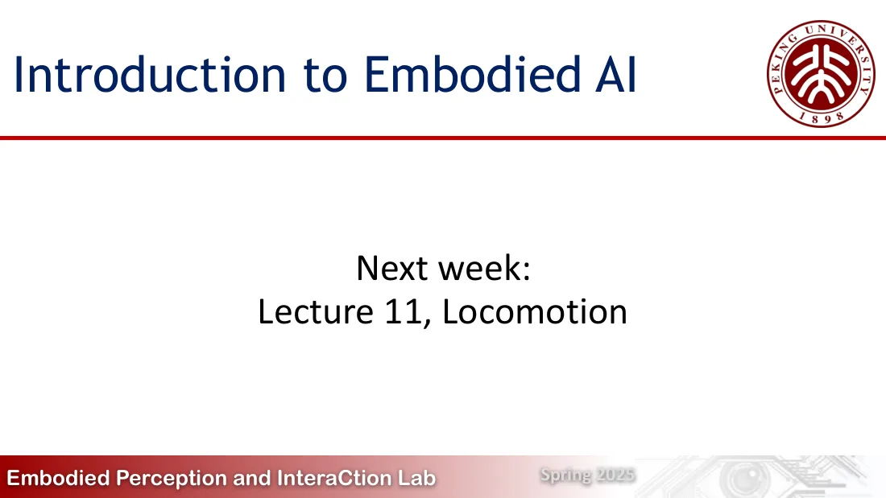
下周：第11讲，运动。
具身感知与交互实验室｜2025年春季
Lecture 11 · 87页
Lecture 11 · PDF p1
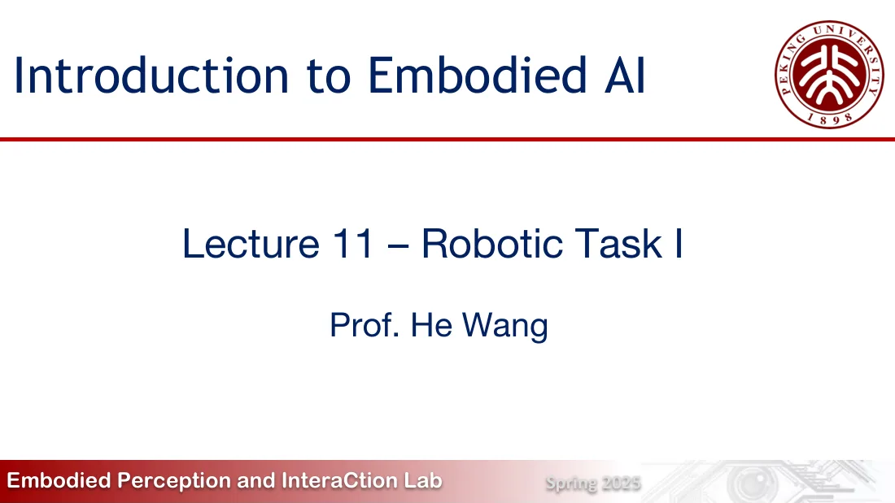
第11讲——机器人任务I
王鹤教授（Prof. He Wang）
具身感知与交互实验室（Embodied Perception and InteraCtion Lab） · 2025年春季
Lecture 11 · PDF p2
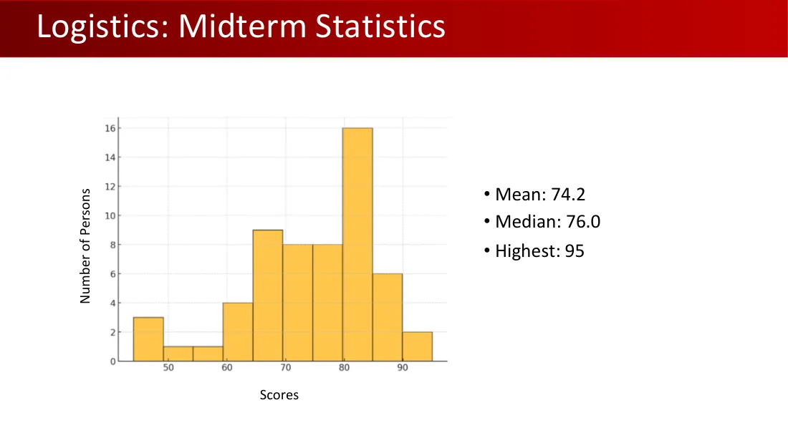
横轴：分数（Scores）
纵轴：人数（Number of Persons）
- 平均分：74.2
- 中位数：76.0
- 最高分：95
Lecture 11 · PDF p3
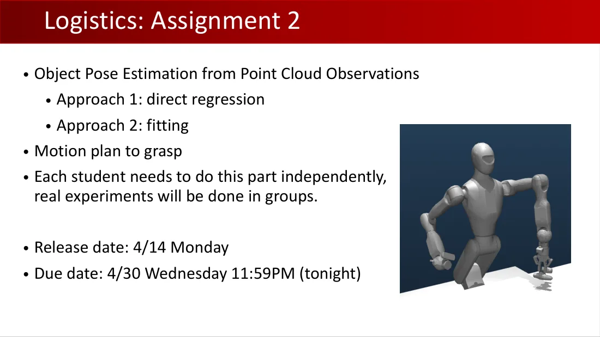
- 根据点云观测估计物体位姿
- 方法1：直接回归
- 方法2：拟合
- 规划抓取运动
- 每位学生需独立完成这部分，真实实验将分组进行。
- 发布日期：4月14日，星期一
- 截止日期：4月30日，星期三，晚上11:59（今晚）
Lecture 11 · PDF p4
Lecture 11 · PDF p5
Lecture 11 · PDF p6
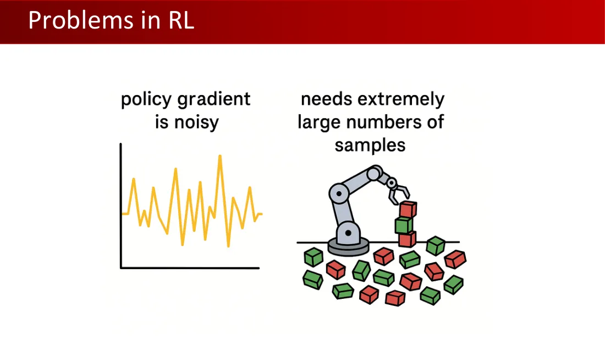
策略梯度的噪声很大
需要极大量的样本
Lecture 11 · PDF p7
Lecture 11 · PDF p8
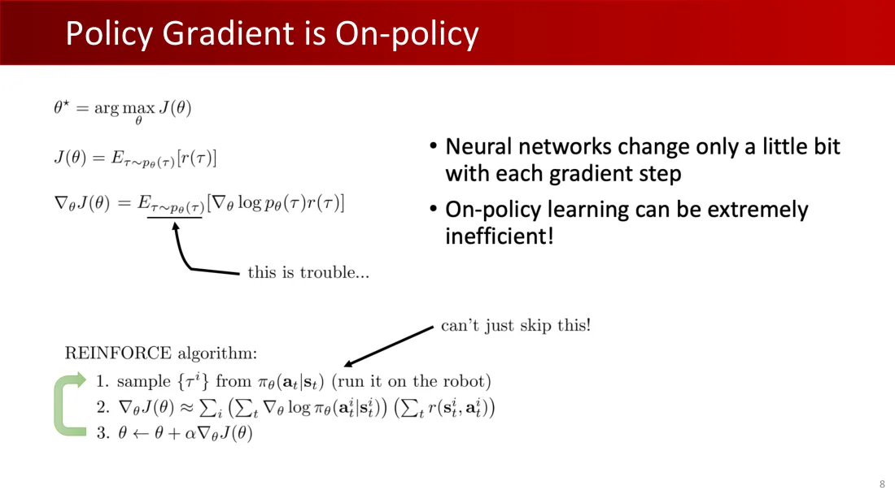
$$\theta^*=\arg\max_\theta J(\theta)$$
$$J(\theta)=\mathbb E_{\tau\sim p_\theta(\tau)}[r(\tau)]$$
$$\nabla_\theta J(\theta)=\mathbb E_{\tau\sim p_\theta(\tau)}[\nabla_\theta\log p_\theta(\tau)r(\tau)]$$
问题在这里……
- 神经网络每个梯度步骤只发生很小的变化。
- 同策略学习可能极其低效！
REINFORCE算法：
- 从 $\pi_\theta(a_t|s_t)$ 采样 $\{\tau^i\}$（在机器人上运行）。
- $\nabla_\theta J(\theta)\approx\sum_i(\sum_t\nabla_\theta\log\pi_\theta(a_t^i|s_t^i))(\sum_t r(s_t^i,a_t^i))$。
- $\theta\leftarrow\theta+\alpha\nabla_\theta J(\theta)$。
不能直接跳过这一步！
Lecture 11 · PDF p9
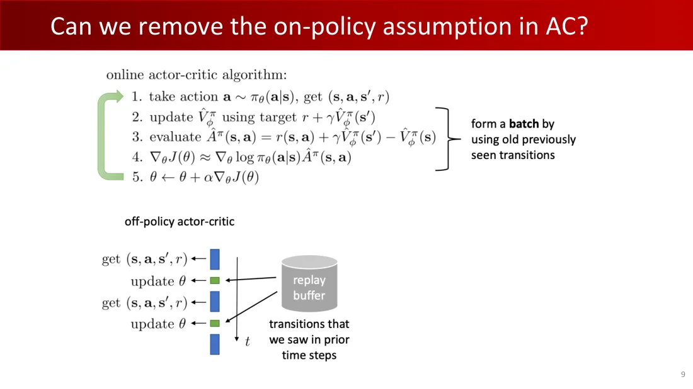
在线Actor-Critic算法：
- 采取动作 $a\sim\pi_\theta(a|s)$，得到 $(s,a,s\prime,r)$。
- 用目标 $r+\gamma\hat V_\phi^\pi(s\prime)$ 更新 $\hat V_\phi^\pi$。
- 计算 $\hat A^\pi(s,a)=r(s,a)+\gamma\hat V_\phi^\pi(s\prime)-\hat V_\phi^\pi(s)$。
- 计算 $\nabla_\theta J(\theta)\approx\nabla_\theta\log\pi_\theta(a|s)\hat A^\pi(s,a)$。
- $\theta\leftarrow\theta+\alpha\nabla_\theta J(\theta)$。
使用所有以前见过的转移，组成一个批次。
异策略Actor-Critic：得到 $(s,a,s\prime,r)$ → 更新 $\theta$ → 得到 $(s,a,s\prime,r)$ → 更新 $\theta$；时间 $t$。
经验回放池（Replay buffer）：以前时间步中看到的转移。
Lecture 11 · PDF p10
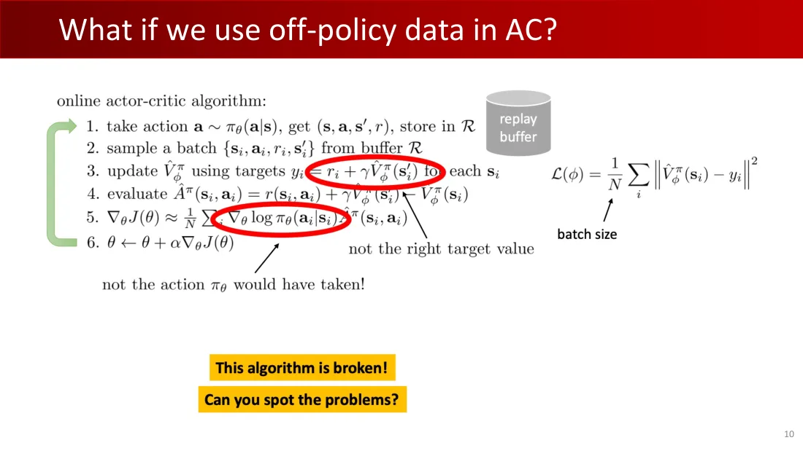
在线Actor-Critic算法：
- 采取动作 $a\sim\pi_\theta(a|s)$，得到 $(s,a,s\prime,r)$，存入 $\mathcal R$。
- 从回放池 $\mathcal R$ 中采样批次 $\{s_i,a_i,r_i,s_i\prime\}$。
- 对每个 $s_i$，用目标 $y_i=r_i+\gamma\hat V_\phi^\pi(s_i\prime)$ 更新 $\hat V_\phi^\pi$。
- 计算 $\hat A^\pi(s_i,a_i)=r(s_i,a_i)+\gamma\hat V_\phi^\pi(s_i\prime)-\hat V_\phi^\pi(s_i)$。
- $\nabla_\theta J(\theta)\approx\frac1N\sum_i\nabla_\theta\log\pi_\theta(a_i|s_i)\hat A^\pi(s_i,a_i)$。
- $\theta\leftarrow\theta+\alpha\nabla_\theta J(\theta)$。
$$\mathcal L(\phi)=\frac1N\sum_i\left[\hat V_\phi^\pi(s_i)-y_i\right]^2$$
$N$：批次大小。
不是正确的目标价值；不是你本来会采取的动作！
这个算法有问题！你能找出问题吗？
Lecture 11 · PDF p11
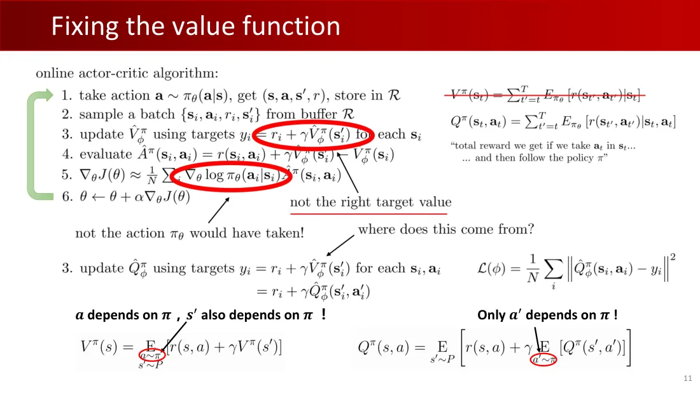
在线Actor-Critic算法：
- 采取动作 $a\sim\pi_\theta(a|s)$，得到 $(s,a,s\prime,r)$，存入 $\mathcal R$。
- 从回放池 $\mathcal R$ 中采样批次 $\{s_i,a_i,r_i,s_i\prime\}$。
- 对每个 $s_i$，用目标 $y_i=r_i+\gamma\hat V_\phi^\pi(s_i\prime)$ 更新 $\hat V_\phi^\pi$。
- 计算 $\hat A^\pi(s_i,a_i)=r(s_i,a_i)+\gamma\hat V_\phi^\pi(s_i\prime)-\hat V_\phi^\pi(s_i)$。
- $\nabla_\theta J(\theta)\approx\frac1N\sum_i\nabla_\theta\log\pi_\theta(a_i|s_i)\hat A^\pi(s_i,a_i)$。
- $\theta\leftarrow\theta+\alpha\nabla_\theta J(\theta)$。
不是正确的目标价值；不是你本来会采取的动作！这从哪里来？
$$V^\pi(s_t)=\sum_{t\prime=t}^T\mathbb E_{\pi_\theta}[r(s_{t\prime},a_{t\prime})\mid s_t]$$
$$Q^\pi(s_t,a_t)=\mathbb E_{\tau\sim\pi}\left[\sum_{t\prime=t}^T r(s_{t\prime},a_{t\prime})\middle|s_t,a_t\right]$$
“如果我们在状态s采取动作a，随后遵循策略π，获得的总奖励”。
$$y_i=r_i+\gamma\hat V_\phi^\pi(s_i\prime)=r_i+\gamma\hat Q_\phi^\pi(s_i\prime,a_i\prime)$$
$$V^\pi(s)=\mathbb E_{\substack{a\sim\pi\\s\prime\sim P}}[r(s,a)+\gamma V^\pi(s\prime)]$$
$$Q^\pi(s,a)=\mathbb E_{s\prime\sim P}[r(s,a)+\gamma\mathbb E_{a\prime\sim\pi}[Q^\pi(s\prime,a\prime)]]$$
$$\mathcal L(\phi)=\frac1N\sum_i[\hat Q_\phi^\pi(s_i,a_i)-y_i]^2$$
$a$依赖于$\pi$，$s\prime$也依赖于$\pi$！
只有$a\prime$依赖于$\pi$！
Lecture 11 · PDF p12
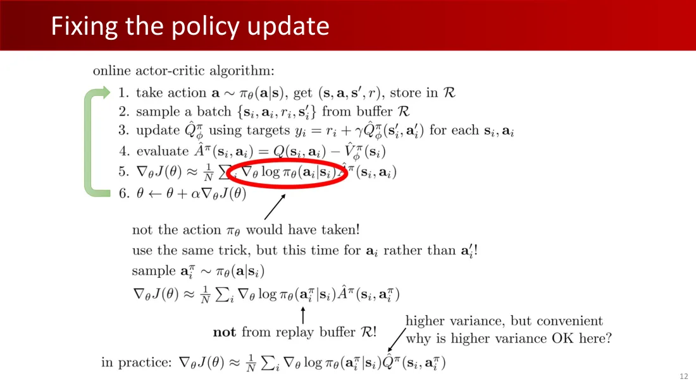
在线Actor-Critic算法：
- 采取动作 $a\sim\pi_\theta(a|s)$，得到 $(s,a,s\prime,r)$，存入 $\mathcal R$。
- 从回放池 $\mathcal R$ 中采样批次 $\{s_i,a_i,r_i,s_i\prime\}$。
- 对每个 $s_i,a_i$，用目标 $y_i=r_i+\gamma\hat Q_\phi^\pi(s_i\prime,a_i\prime)$ 更新 $\hat Q_\phi^\pi$。
- 计算 $\hat A^\pi(s_i,a_i)=Q^\pi(s_i,a_i)-\hat V_\phi^\pi(s_i)$。
- $\nabla_\theta J(\theta)\approx\frac1N\sum_i\nabla_\theta\log\pi_\theta(a_i|s_i)\hat A^\pi(s_i,a_i)$。
- $\theta\leftarrow\theta+\alpha\nabla_\theta J(\theta)$。
不是你本来会采取的动作！使用同样的办法，不过这次针对$a_i$而不是$a_i\prime$。
采样 $a_i^\pi\sim\pi_\theta(a|s_i)$。
$$\nabla_\theta J(\theta)\approx\frac1N\sum_i\nabla_\theta\log\pi_\theta(a_i^\pi|s_i)\hat A^\pi(s_i,a_i^\pi)$$
不是来自回放池$\mathcal R$！方差更高，但方便。为什么这里可以使用更高的方差？
$$\nabla_\theta J(\theta)\approx\frac1N\sum_i\nabla_\theta\log\pi_\theta(a_i^\pi|s_i)\hat Q^\pi(s_i,a_i^\pi)$$
Lecture 11 · PDF p13
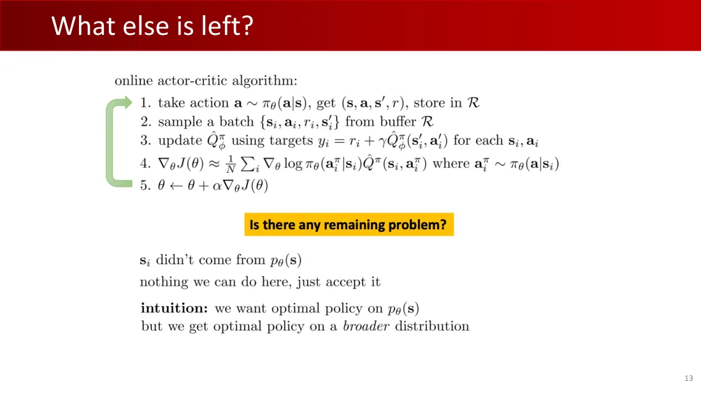
在线Actor-Critic算法：
- 采取动作 $a\sim\pi_\theta(a|s)$，得到 $(s,a,s\prime,r)$，存入 $\mathcal R$。
- 从回放池 $\mathcal R$ 中采样批次 $\{s_i,a_i,r_i,s_i\prime\}$。
- 对每个 $s_i,a_i$，用目标 $y_i=r_i+\gamma\hat Q_\phi^\pi(s_i\prime,a_i\prime)$ 更新 $\hat Q_\phi^\pi$。
- $\nabla_\theta J(\theta)\approx\frac1N\sum_i\nabla_\theta\log\pi_\theta(a_i^\pi|s_i)\hat Q^\pi(s_i,a_i^\pi)$。
- $\theta\leftarrow\theta+\alpha\nabla_\theta J(\theta)$。
其中 $a_i^\pi\sim\pi_\theta(a|s_i)$。
还有剩余问题吗？
$s_i$并非来自$p_\theta(s)$。这里我们无能为力，先接受这一点。
直觉：我们希望得到在$p_\theta(s)$上最优的策略，但实际得到的是在更广分布上最优的策略。
Lecture 11 · PDF p14
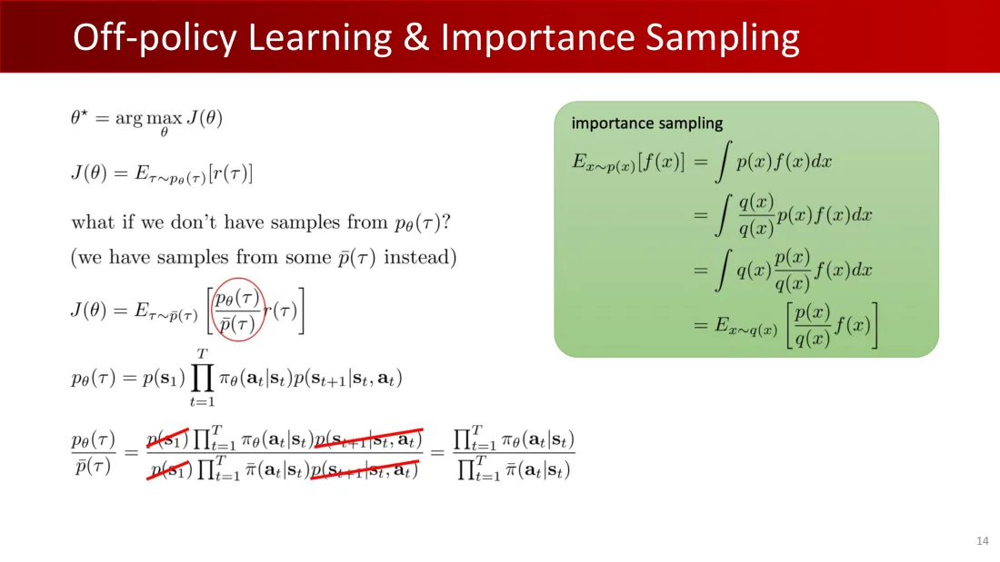
$$\theta^*=\arg\max_\theta J(\theta),\qquad J(\theta)=\mathbb E_{\tau\sim p_\theta(\tau)}[r(\tau)]$$
如果没有$p_\theta(\tau)$的样本怎么办？我们拥有另一个分布$\bar p(\tau)$的样本。
$$J(\theta)=\mathbb E_{\tau\sim\bar p(\tau)}\left[\frac{p_\theta(\tau)}{\bar p(\tau)}r(\tau)\right]$$
$$p_\theta(\tau)=p(s_1)\prod_{t=1}^T\pi_\theta(a_t|s_t)p(s_{t+1}|s_t,a_t)$$
$$\frac{p_\theta(\tau)}{\bar p(\tau)}=\frac{p(s_1)\prod_{t=1}^T\pi_\theta(a_t|s_t)p(s_{t+1}|s_t,a_t)}{p(s_1)\prod_{t=1}^T\bar\pi(a_t|s_t)p(s_{t+1}|s_t,a_t)}=\frac{\prod_{t=1}^T\pi_\theta(a_t|s_t)}{\prod_{t=1}^T\bar\pi(a_t|s_t)}$$
重要性采样：
$$\mathbb E_{x\sim p(x)}[f(x)]=\int p(x)f(x)dx=\int\frac{q(x)}{q(x)}p(x)f(x)dx=\int q(x)\frac{p(x)}{q(x)}f(x)dx=\mathbb E_{x\sim q(x)}\left[\frac{p(x)}{q(x)}f(x)\right]$$
Lecture 11 · PDF p15
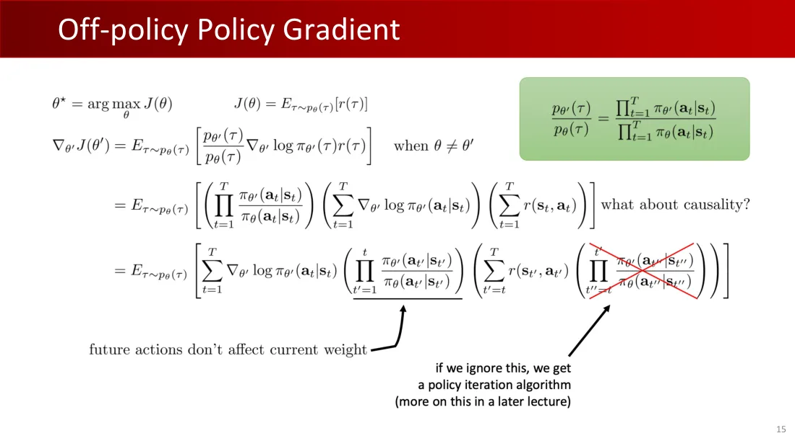
$$\theta^*=\arg\max_\theta J(\theta),\quad J(\theta)=\mathbb E_{\tau\sim p_\theta(\tau)}[r(\tau)]$$
$$\nabla_{\theta\prime}J(\theta\prime)=\mathbb E_{\tau\sim p_\theta(\tau)}\left[\frac{p_{\theta\prime}(\tau)}{p_\theta(\tau)}\nabla_{\theta\prime}\log p_{\theta\prime}(\tau)r(\tau)\right],\quad\theta\ne\theta\prime$$
$$\frac{p_{\theta\prime}(\tau)}{p_\theta(\tau)}=\frac{\prod_{t=1}^T\pi_{\theta\prime}(a_t|s_t)}{\prod_{t=1}^T\pi_\theta(a_t|s_t)}$$
$$\nabla_{\theta\prime}J(\theta\prime)=\mathbb E_{\tau\sim p_\theta(\tau)}\left[\left(\prod_{t=1}^T\frac{\pi_{\theta\prime}(a_t|s_t)}{\pi_\theta(a_t|s_t)}\right)\left(\sum_{t=1}^T\nabla_{\theta\prime}\log\pi_{\theta\prime}(a_t|s_t)\right)\left(\sum_{t=1}^T r(s_t,a_t)\right)\right]$$
因果性呢？
$$=\mathbb E_{\tau\sim p_\theta(\tau)}\left[\sum_{t=1}^T\nabla_{\theta\prime}\log\pi_{\theta\prime}(a_t|s_t)\left(\prod_{t\prime=1}^{t}\frac{\pi_{\theta\prime}(a_{t\prime}|s_{t\prime})}{\pi_\theta(a_{t\prime}|s_{t\prime})}\right)\left(\sum_{t\prime=t}^T r(s_{t\prime},a_{t\prime})\right)\left(\prod_{t\prime\prime=t}^{t}\frac{\pi_{\theta\prime}(a_{t\prime}|s_{t\prime\prime})}{\pi_\theta(a_{t\prime\prime}|s_{t\prime\prime})}\right)\right]$$
未来的动作不影响当前权重。
如果忽略这一项，就得到策略迭代算法（课程后面会进一步讨论）。
Lecture 11 · PDF p16
$$\nabla_{\theta\prime}J(\theta\prime)=\mathbb E_{\tau\sim p_\theta(\tau)}\left[\sum_{t=1}^T\nabla_{\theta\prime}\log\pi_{\theta\prime}(a_t|s_t)\left(\prod_{t\prime=1}^{t}\frac{\pi_{\theta\prime}(a_{t\prime}|s_{t\prime})}{\pi_\theta(a_{t\prime}|s_{t\prime})}\right)\left(\sum_{t\prime=t}^T r(s_{t\prime},a_{t\prime})\right)\right]$$
随$T$呈指数变化……将目标写成稍有不同的形式。
同策略策略梯度：
$$\nabla_\theta J(\theta)\approx\frac1N\sum_{i=1}^N\sum_{t=1}^T\nabla_\theta\log\pi_\theta(a_{i,t}|s_{i,t})\hat Q_{i,t}$$
异策略策略梯度：$(s_{i,t},a_{i,t})\sim\pi_\theta(s_t,a_t)$
$$\nabla_{\theta\prime}J(\theta\prime)\approx\frac1N\sum_{i=1}^N\sum_{t=1}^T\frac{\pi_{\theta\prime}(s_{i,t},a_{i,t})}{\pi_\theta(s_{i,t},a_{i,t})}\nabla_{\theta\prime}\log\pi_{\theta\prime}(a_{i,t}|s_{i,t})\hat Q_{i,t}$$
$$=\frac1N\sum_{i=1}^N\sum_{t=1}^T\frac{\pi_{\theta\prime}(s_{i,t})}{\pi_\theta(s_{i,t})}\frac{\pi_{\theta\prime}(a_{i,t}|s_{i,t})}{\pi_\theta(a_{i,t}|s_{i,t})}\nabla_{\theta\prime}\log\pi_{\theta\prime}(a_{i,t}|s_{i,t})\hat Q_{i,t}$$
忽略这一部分：状态分布比。课程稍后将说明这为什么合理。
Lecture 11 · PDF p17
Lecture 11 · PDF p18
- TRPO：在约束下优化平均奖励（使用重要性采样）。
$$\theta_{k+1}=\arg\max_\theta\mathcal L(\theta_k,\theta),\qquad\bar D_{KL}(\theta\Vert\theta_k)\le\delta$$
$$\mathcal L(\theta_k,\theta)=\mathbb E_{s,a\sim\pi_{\theta_k}}\left[\frac{\pi_\theta(a|s)}{\pi_{\theta_k}(a|s)}A^{\pi_{\theta_k}}(s,a)\right]$$
- 直觉：$\pi_\theta$在单步内不应变化太多。
- 相当于在每一步改变步长，避免训练崩溃。
- 可以证明回报是单调的。
- TRPO使用硬约束控制变化。
- 单调性 → 局部最小值
- 复杂的数学
Schulman, John, et al. “Trust region policy optimization.”（信赖域策略优化）ICML，PMLR，2015。
Lecture 11 · PDF p19
- 如何优化
$$\theta_{k+1}=\arg\max_\theta\mathcal L(\theta_k,\theta),\qquad\bar D_{KL}(\theta\Vert\theta_k)\le\delta$$
- 步骤1：在$\theta_k$附近，将目标与约束泰勒展开至主要阶次。
$$\theta_{k+1}=\arg\max_\theta g^T(\theta-\theta_k),\quad\frac12(\theta-\theta_k)^TH(\theta-\theta_k)\le\delta$$
$$g_k=\nabla_\theta\mathcal L(\theta_k,\theta)\big|_{\theta_k},\quad \hat H_k=\nabla_\theta^2\left(\frac1N\sum_i KL[\pi_{\theta_k}(\cdot|s_i)\Vert\pi_\theta(\cdot|s_i)]\right)\big|_{\theta_k}$$
- 步骤2：用拉格朗日对偶得到解。
$$\theta_{k+1}=\theta_k+\sqrt{\frac{2\delta}{g^TH^{-1}g}}H^{-1}g$$
Lecture 11 · PDF p20
Lecture 11 · PDF p21
算法1：信赖域策略优化
- 输入：初始策略参数$\theta_0$、初始价值函数参数$\phi_0$。
- 超参数：KL散度限额$\delta$、回溯系数$\alpha$、最大回溯步数$K$。
- 对$k=0,1,2,\ldots$循环。
- 在环境中运行$\pi_k=\pi(\theta_k)$，收集轨迹集$\mathcal D_k=\{\tau_i\}$。
- 计算后续回报$\hat R_t$。
- 依据当前价值函数$V_{\phi_k}$计算优势估计$\hat A_t$（可用任意优势估计方法）。
- 估计策略梯度：
$$\hat g_k=\frac1{|\mathcal D_k|}\sum_{\tau\in\mathcal D_k}\sum_{t=0}^T\nabla_\theta\log\pi_\theta(a_t|s_t)\big|_{\theta_k}\hat A_t$$
- 用共轭梯度算法计算$\hat x_k\approx\hat H_k^{-1}\hat g_k$，其中$\hat H_k$是样本平均KL散度的Hessian矩阵。
- 用回溯线搜索更新策略：
$$\theta_{k+1}=\theta_k+\alpha^j\sqrt{\frac{2\delta}{\hat x_k^T\hat H_k\hat x_k}}\hat x_k$$
$j\in\{0,1,2,\ldots,K\}$取使样本损失改善且满足样本KL散度约束的最小值。
10. 通过回归最小化均方误差来拟合价值函数：
$$\phi_{k+1}=\arg\min_\phi\frac1{|\mathcal D_k|T}\sum_{\tau\in\mathcal D_k}\sum_{t=0}^T\left(V_\phi(s_t)-\hat R_t\right)^2$$
通常使用某种梯度下降算法。11. 结束循环。
优势估计稍后在PPO部分讨论；回溯线搜索；价值更新。
Lecture 11 · PDF p22
Lecture 11 · PDF p23
- 将概率比截断到$[1-\epsilon,1+\epsilon]$。
$$\theta_{k+1}=\arg\max_\theta\mathbb E_{s,a\sim\pi_{\theta_k}}[L(s,a,\theta_k,\theta)]$$
$$L(s,a,\theta_k,\theta)=\min\left(\frac{\pi_\theta(a|s)}{\pi_{\theta_k}(a|s)}A^{\pi_{\theta_k}}(s,a),\operatorname{clip}\left(\frac{\pi_\theta(a|s)}{\pi_{\theta_k}(a|s)},1-\epsilon,1+\epsilon\right)A^{\pi_{\theta_k}}(s,a)\right)$$
情况1：$A^{\pi_{\theta_k}}$为正。
$$L=\min\left(\frac{\pi_\theta(a|s)}{\pi_{\theta_k}(a|s)},1+\epsilon\right)A^{\pi_{\theta_k}}(s,a)$$
情况2：$A^{\pi_{\theta_k}}$为负。
$$L=\max\left(\frac{\pi_\theta(a|s)}{\pi_{\theta_k}(a|s)},1-\epsilon\right)A^{\pi_{\theta_k}}(s,a)$$
曲线坐标：横轴$r$（概率比），纵轴$L$；$A>0$ / $A<0$；截断边界$1-\epsilon$、$1+\epsilon$。
Lecture 11 · PDF p24
- TRPO中的KL约束很难施加。
- 自适应KL惩罚系数具有类似效果。
- 自适应KL可以替代截断代理目标。
- 使KL散度达到某个目标值$d_{targ}$。
$$L^{KLPEN}(\theta)=\hat{\mathbb E}_t\left[\frac{\pi_\theta(a_t|s_t)}{\pi_{\theta_{old}}(a_t|s_t)}\hat A_t-\beta KL[\pi_{\theta_{old}}(\cdot|s_t),\pi_\theta(\cdot|s_t)]\right]$$
计算$d=\hat{\mathbb E}_t[KL[\pi_{\theta_{old}}(\cdot|s_t),\pi_\theta(\cdot|s_t)]]$。
- 若$d<d_{targ}/1.5$，$\beta\leftarrow\beta/2$。
- 若$d>d_{targ}\times1.5$，$\beta\leftarrow\beta\times2$。
Lecture 11 · PDF p25
- 核心思想：组合多个截断优势估计，平衡优势估计的偏差与方差。
- $\hat A_t^{(1)}=r_t+\gamma V(s_{t+1})-V(s_t)$ → 高偏差、低方差。
- $\hat A_t^{(2)}=r_t+\gamma r_{t+1}+\gamma^2V(s_{t+2})-V(s_t)$ → 中等偏差/方差。
- $\hat A_t^{(\infty)}=\sum_{l=0}^\infty\gamma^lr_{t+l}-V(s_t)$ → 无偏、高方差。
- 以$\omega_k=\lambda^{k-1}$为权重组合这些估计。
$$\hat A_t^{GAE}=\frac{\sum_k\omega_k\hat A_t^{(k)}}{\sum_k\omega_k}=\delta_t+\gamma\lambda\delta_{t+1}+\cdots+(\gamma\lambda)^{T-t+1}\delta_{T-1}$$
$$\delta_t=r_t+\gamma V(s_{t+1})-V(s_t)$$
Schulman, John, et al. “High-dimensional continuous control using generalized advantage estimation.”（使用广义优势估计进行高维连续控制）arXiv:1506.02438。
Lecture 11 · PDF p26
算法1：PPO-Clip
- 输入：初始策略参数$\theta_0$、初始价值函数参数$\phi_0$。
- 对$k=0,1,2,\ldots$循环。
- 在环境中运行$\pi_k=\pi(\theta_k)$，收集轨迹集$\mathcal D_k=\{\tau_i\}$。
- 计算后续回报$\hat R_t$。
- 根据当前价值函数$V_{\phi_k}$计算优势估计$\hat A_t$（任意优势估计方法；这里通常使用GAE）。
- 最大化PPO-Clip目标，更新策略：
$$\theta_{k+1}=\arg\max_\theta\frac1{|\mathcal D_k|T}\sum_{\tau\in\mathcal D_k}\sum_{t=0}^T\min\left(\frac{\pi_\theta(a_t|s_t)}{\pi_{\theta_k}(a_t|s_t)}A^{\pi_{\theta_k}}(s_t,a_t),g(\epsilon,A^{\pi_{\theta_k}}(s_t,a_t))\right)$$
$$g(\epsilon,A)=\begin{cases}(1+\epsilon)A&A\ge0\\(1-\epsilon)A&A<0\end{cases}$$
通常使用Adam进行随机梯度上升。7. 通过均方误差回归拟合价值函数：
$$\phi_{k+1}=\arg\min_\phi\frac1{|\mathcal D_k|T}\sum_{\tau\in\mathcal D_k}\sum_{t=0}^T\left(V_\phi(s_t)-\hat R_t\right)^2$$
通常使用某种梯度下降算法。8. 结束循环。价值更新。
Lecture 11 · PDF p27
Lecture 11 · PDF p28
Lecture 11 · PDF p29
- 四足机器人运动任务使用的超参数
| 超参数 | 数值 |
|---|---|
| 折扣因子$\gamma$ | 0.98 |
| 截断$\epsilon$ | 0.2 |
| GAE $\lambda$ | 0.95 |
| 学习率 | 0.0003 |
| 环境数量 | 16,384 |
| 小批次大小 | 512 |
| 更新轮数$K$ | 5 |
曲线：回合奖励总和（episode/sum_reward）；横轴：步数（Step）。
- 不同实现和超参数的比较
| 算法 | 平均归一化分数 |
|---|---|
| 不截断、不惩罚 | −0.39 |
| 截断，$\epsilon=0.1$ | 0.76 |
| 截断，$\epsilon=0.2$ | 0.82 |
| 截断，$\epsilon=0.3$ | 0.70 |
| 自适应KL，$d_{targ}=0.003$ | 0.68 |
| 自适应KL，$d_{targ}=0.01$ | 0.74 |
| 自适应KL，$d_{targ}=0.03$ | 0.71 |
| 固定KL，$\beta=0.3$ | 0.62 |
| 固定KL，$\beta=1$ | 0.71 |
| 固定KL，$\beta=3$ | 0.72 |
| 固定KL，$\beta=10$ | 0.69 |
Lecture 11 · PDF p30
- 优势归一化：$A_t^{norm}=\frac{A_t-\mu_A}{\sqrt{\sigma_A^2+\epsilon}}$。
- 只在训练时使用。
- 在小批次内归一化。
- 价值函数尚未训练好时，有助于让$A_t$以0为中心。
- 状态归一化：$s_t^{norm}=\frac{s_t-\mu_{run}}{\sqrt{\sigma_{run}^2+\epsilon}}$。
- 需恢复状态的运行均值，并在测试时使用。
- 类似Batch-Norm（批归一化），有助于训练。
- 奖励缩放：$r_t^{scale}=\frac{r_t}{\sqrt{\sigma_{run}^2+\epsilon}}$。
- 缩放后的奖励让价值函数$V_\phi(s_t)$更容易训练。
Lecture 11 · PDF p31
Lecture 11 · PDF p32
Lecture 11 · PDF p33
OpenAI强化学习教程（OpenAI Tutorial to RL）
https://spinningup.openai.com/en/latest/user/introduction.html
OpenAI Spinning Up（入门教程）
- 算法文档
- 香草策略梯度（Vanilla Policy Gradient）
- 信赖域策略优化（Trust Region Policy Optimization）
- 近端策略优化（Proximal Policy Optimization）
- 深度确定性策略梯度（Deep Deterministic Policy Gradient）
- 双延迟DDPG（Twin Delayed DDPG）
- 软Actor-Critic（Soft Actor-Critic）
Lecture 11 · PDF p34
Lecture 11 · PDF p35
Lecture 11 · PDF p36
Lecture 11 · PDF p37
Lecture 11 · PDF p38
Lecture 11 · PDF p39
Lecture 11 · PDF p40
- 定义：在每个时间步$t_s$，求解以下优化问题，并将$u(t_s)$作为动作执行。
$$\begin{aligned}\min_{u(\cdot)}\quad&\int_{t_s}^{t_f}l(x(t),u(t),t)\,dt&&(1a)\quad\text{代价}\\\text{满足}\quad&x(t_s)=x_s&&(1b)\quad\text{初始条件}\\&\dot x=f(x,u,t)&&(1c)\quad\text{系统动力学}\\&g(x,u,t)=0&&(1d)\quad\text{等式约束}\\&h(x,u,t)\ge0&&(1e)\quad\text{不等式约束}\end{aligned}$$
其中$x(t)$为状态，$u(t)$为控制输入。
Lecture 11 · PDF p41
控制输入
$$u(t)=[F(t)]$$
状态
$$x(t)=\begin{bmatrix}y(t)\\\theta(t)\\\dot y(t)\\\dot\theta(t)\end{bmatrix}$$
- 代价
$$\min_{u(\cdot)}\int_{t_s}^{t_f}[x(t)^TQx(t)+u(t)^TRu(t)]dt,\quad Q=\operatorname{diag}(10,100,1,10),\quad R=0.1$$
- 系统动力学
$$\dot x=\begin{bmatrix}\dot y\\\dot\theta\\\frac{F+ml\dot\theta^2\sin\theta-mg\sin\theta\cos\theta}{M+m\sin^2\theta}\\\frac{-F\cos\theta-ml\dot\theta^2\sin\theta\cos\theta+(M+m)g\sin\theta}{l(M+m\sin^2\theta)}\end{bmatrix}$$
- 约束
$$h(x,u,t)=\begin{bmatrix}y(t)+y_{max}\\y_{max}-y(t)\\F(t)+F_{max}\\F_{max}-F(t)\end{bmatrix}\ge0$$
图内符号：$y,m,M,g,\theta,l,u$。更多细节请参阅原页链接的笔记。
Lecture 11 · PDF p42
控制输入
$$u(t)=\begin{bmatrix}\tau_L(t)\\\tau_R(t)\end{bmatrix}$$
状态
$$x(t)=[y(t),\dot y(t),\theta_1(t),\dot\theta_1(t),\theta_2(t),\dot\theta_2(t)]^T$$
- 代价
$$\min_{u(\cdot)}\int_{t_s}^{t_f}[w_1(\dot y(t)-v_{target})^2+w_2\|u(t)\|^2]dt$$
- 系统动力学
$$\dot x(t)=f(x(t),u(t))=\begin{bmatrix}\dot q_b(t)\\M^{-1}(x)[-C(x,\dot x)-G(x)+Bu(t)]\end{bmatrix}$$
$M$：惯性矩阵；$C$：科里奥利与离心力；$G$：重力；$B$：驱动矩阵。
- 约束
$$|\tau_L(t)|\le\tau_{max},\qquad|\tau_R(t)|\le\tau_{max}$$
接触约束和动力学极难建模！图内：$\theta_1,\theta_2,y$。
Lecture 11 · PDF p43
Lecture 11 · PDF p44
Lecture 11 · PDF p45
Lecture 11 · PDF p46
Lecture 11 · PDF p47
Lecture 11 · PDF p48
Lecture 11 · PDF p49
Lecture 11 · PDF p50
Lecture 11 · PDF p51
Lecture 11 · PDF p52
Lecture 11 · PDF p53
Lecture 11 · PDF p54
- 训练四足机器人站立需要哪些奖励？
- 任务奖励
$$r_{upright}=z_{base}\cdot[0,0,1]$$
$$r_{height}=\operatorname{clip}(h_{base}-h_{min},0,r_{max})$$
$$r_{contact}=\frac14\sum_{i=1}^4\mathbf1_{contact_i}$$
- 正则化奖励
$$r_{joint\_limit}=-\sum_j\exp(\alpha\cdot(q_j-q_{j,limit})^2)$$
$$r_{energy}=-\sum_j|\tau_j\cdot\dot q_j|$$
若机器人出现不希望的运动，需要增加正则化奖励。
Lecture 11 · PDF p55
运动跟踪中的常用奖励
- 使用与参考运动有关的奖励，可减轻繁重的奖励设计。
$$\phi(x):=\exp(-k\|x\|^2)$$
| 奖励项 | 表达式 |
|---|---|
| 水平速度跟踪 | $\phi(v_{xy}^*-v_{xy})$ |
| 偏航角速度跟踪 | $\phi(\omega_z^*-\omega_z)$ |
| 基座z方向运动 | $-v_z^2$或$\phi(v_z)$ |
| 横滚与俯仰角速度 | $-\|\omega_{xy}\|^2$或$\phi(\omega_{xy})$ |
| 朝向 | $-\|[0,0,1]^T-e_z^b\|^2$ |
| 关节速度 | $-\sum_{i\in joints}\|\dot q_i\|^2$ |
| 关节加速度 | $-\sum_{i\in joints}\|\ddot q_i\|^2$ |
| 关节力矩 | $-\sum_{i\in joints}\|\tau_i\|^2$ |
| 关节机械功率 | $-\sum_{i\in joints}(\tau_i\ast\dot q_i)^2$ |
| 动作变化率 | $-\|a_t-a_{t-1}\|^2$ |
| 动作平滑性 | $-\|a_t-2a_{t-1}+a_{t-2}\|^2$ |
参考：https://github.com/robfiras/loco-mujoco
Lecture 11 · PDF p56
Lecture 11 · PDF p57
Lecture 11 · PDF p58
例1：地形穿越
Learning to Walk in Minutes Using Massively Parallel Deep Reinforcement Learning（使用大规模并行深度强化学习，在数分钟内学会行走）
Nikita Rudin：苏黎世联邦理工学院与NVIDIA，nrudin@ethz.ch；David Hoeller：苏黎世联邦理工学院与NVIDIA，dhoeller@ethz.ch；Philipp Reist：NVIDIA，preist@nvidia.com；Marco Hutter：苏黎世联邦理工学院，mahutter@ethz.ch。
我们创建复杂度逐渐增加的地形。
RL（强化学习）；策略（Policy）；环境（Environment）；任务1、任务2、……；状态$s_t$、动作$a_t$。
Lecture 11 · PDF p59
例2：避障
Robot Parkour Learning（机器人跑酷学习）
Ziwen Zhuang、Zipeng Fu、Jianren Wang、Christopher Atkeson、Sören Schwertfeger、Chelsea Finn、Hang Zhao；上海期智研究院、斯坦福大学、上海科技大学、卡内基梅隆大学、清华大学；*项目共同负责人。
技能：攀爬（Climb）、跳跃（Leap）、匍匐（Crawl）、倾斜（Tilt）。软动力学约束、硬动力学约束。
例3：快速移动
Rapid Locomotion via Reinforcement Learning（通过强化学习实现快速运动）
Gabriel B. Margolis、Ge Yang、Kartik Paigwar、Tao Chen、Pulkit Agrawal；麻省理工学院Improbable AI实验室；NSF人工智能与基础交互研究所；麻省理工学院，马萨诸塞州剑桥02139。
无课程（No Curriculum）；箱形自适应（Box Adaptive）；网格自适应（Grid Adaptive）。
快速运动图：横轴 $v_x$（米/秒）；纵轴 $v_y$（米/秒）；上行：跟踪误差 $v_x$；下行：跟踪误差 $\omega_z$。
Lecture 11 · PDF p60
例2：地形穿越（基于视觉）
ANYmal Parkour: Learning Agile Navigation for Quadrupedal Robots（ANYmal跑酷：学习四足机器人的敏捷导航）
David Hoeller、Nikita Rudin、Dhanush Sako、Marco Hutter；ETH Zurich（苏黎世联邦理工学院）。
RL（强化学习）；高层策略（High-level Policy）→ 技能1 / 技能2 / 技能3 → 环境（Environment）。
技能库（Skill Library）：行走、爬上、爬下、跳跃、蹲伏。感知模块、导航模块、运动模块。
Lecture 11 · PDF p61
- 为什么某些特权信息（线速度、基座高度）如此重要？
- 想象一只狗跳过沟壑。
- 实际上，只凭本体感觉，狗并不知道自己在哪里。
- 一些分析
我在哪里？
Identifying important sensory feedback for learning locomotion skills（识别学习运动技能所需的重要感觉反馈）
横向对照：跳跃步态（bounding）、平衡恢复（balance recovery）、小跑（trotting）。感觉反馈项：关节位置、关节速度、根部位置、根部旋转、根部线速度、根部角速度。
论文信息：接收2022年12月31日；接受2023年6月30日；在线发表2023年8月21日。
感觉反馈图例：关节位置、重力向量、基座速度x、基座速度y、足位置、基座位置、足接触、关节力矩、关节速度。
Lecture 11 · PDF p62
例1：策略蒸馏
Legged Locomotion in Challenging Terrains using Egocentric Vision（使用自我视角视觉在困难地形上进行足式运动）
Ananye Agarwal、Ashish Kumar、Jitendra Malik、Deepak Pathak；卡内基梅隆大学、加州大学伯克利分校。
教师策略（基于高度图）；学生策略（基于自我视角深度）。阶段1：在仿真中强化学习训练特权信息运动策略；阶段2：仿真中通过监督学习，学习使用机载感知。RMA架构；单体架构；仿真、机器人、扫描点；自我视角深度；特权感知：扫描点、环境参数（质量、摩擦……）；机载感知：本体感觉、自我视角深度、目标动作；阶段1、阶段2；GRU（门控循环单元）、MLP（多层感知机）、Conv（卷积）；复制并冻结；回归；复制以初始化。
例2：非对称Actor-Critic
DreamWaQ: Learning Robust Quadrupedal Locomotion With Implicit Terrain Imagination via Deep Reinforcement Learning（DreamWaQ：通过深度强化学习和隐式地形想象学习鲁棒四足运动）
评论家输入；行动者输入；时序部分观测、当前观测、特权观测。
DreamWaQ作者：I Made Aswin Nahrendra、Byeongho Yu、Hyun Myung（IEEE高级会员）。仿真训练；时间部分观测$o_t^H$；当前观测$o_t$；特权观测$s_t$；上下文辅助估计器（128×64×19）；策略网络（Actor，512×256×128×12）；价值网络（Critic，512×256×128×1）；策略梯度；零样本仿真到真实。
扫描点$m_t$；环境参数$e_t$；本体感觉$x_t$；自我视角深度$d_t$；目标动作$a_t$；策略$\pi_1,\pi_2$；潜变量$z_t,\hat z_t$；GRU、MLP、Conv；阶段1、阶段2；复制并冻结、复制以初始化、回归。
Lecture 11 · PDF p63

QuadWBG: Generalizable Quadrupedal Whole-Body Grasping (Intro)（QuadWBG：可泛化四足机器人全身抓取，简介）
视频时间：0:00 / 6:59。
Lecture 11 · PDF p64
Lecture 11 · PDF p65
Lecture 11 · PDF p66
Lecture 11 · PDF p67
Lecture 11 · PDF p68
Lecture 11 · PDF p69

对地形鲁棒（仅使用本体感觉）
[Lee, Joonho, et al. 2020]
对地形鲁棒（通过视觉、雷达感知环境）
[TAKAHIRO MIKI et al. 2022]
A 楼梯；B 反光地面；C 深雪；D 松软地面适应；E 非刚性障碍；F 位姿估计漂移。
Lecture 11 · PDF p70
Lecture 11 · PDF p71
Lecture 11 · PDF p72

避开障碍 [Ruihan Yang et al. 2022]
自然运动 [Alejandro Escontrela et al. 2022]
训练；动作捕捉数据；运动学重定向；任务；环境；策略；运动先验奖励；$s_t,s_{t+1},a_t,o_t,v_t,r_t^p,r_t^g$。
Lecture 11 · PDF p73

Learning Vision-Guided Quadrupedal Locomotion End-to-End with Cross-Modal Transformers（使用跨模态Transformer端到端学习视觉引导的四足运动）
Ruihan Yang、Minghao Zhang、Nicklas Hansen、Huazhe Xu、Xiaolong Wang；加州大学圣迭戈分校、清华大学、加州大学伯克利分校；ICLR 2022。
论文（Paper）、arXiv、视频（Video）、代码（Code）。
Lecture 11 · PDF p74
Lecture 11 · PDF p75

可视化
深度观测
Lecture 11 · PDF p76
Lecture 11 · PDF p77
Lecture 11 · PDF p78
| 方法 | 特征 | 优点与缺点 | 实现流程图 |
|---|---|---|---|
| 残差学习 | 在当前时间步已知电机位置上添加残差项。 | 优点：收敛快。缺点：需要高质量预定义参考，限于特定运动，对复杂地形缺乏鲁棒性。 | 用户命令 → 参考 → 策略π；机器人反馈进入策略，参考与策略输出叠加后发送给机器人。 |
| 引导学习 | 模仿预定义参考，并直接指定关节级命令。 | 优点：加速学习，对地形鲁棒。缺点：限于预定义运动，缺乏对环境未预见变化的适应性。 | 用户命令与参考 → 策略π → 机器人；机器人反馈进入策略。 |
| 无参考学习 | 没有任何先验知识，从零学习运动技能。 | 优点：探索步态的潜力大，对复杂地形鲁棒。缺点：需要大量步态奖励塑形，以及相对昂贵的计算训练资源。 | 用户命令 → 策略π → 机器人；机器人反馈进入策略。 |
Lecture 11 · PDF p79
Lecture 11 · PDF p80
Lecture 11 · PDF p81
Lecture 11 · PDF p82
Lecture 11 · PDF p83
Lecture 11 · PDF p84
Lecture 11 · PDF p85
- 代码库
- Unitree RL GYM：https://github.com/unitreerobotics/unitree_rl_gym
- Legged GYM：https://github.com/leggedrobotics/legged_gym
- MuJoCo Playground：https://github.com/google-deepmind/mujoco_playground
- 论文
- 四足运动
- Learning-based legged locomotion: state of the art and future perspectives（基于学习的足式运动：研究现状与未来展望）
- Learning to Walk in Minutes Using Massively Parallel Deep Reinforcement Learning（用大规模并行深度强化学习在数分钟内学会行走）
- DreamWaQ: Learning Robust Quadrupedal Locomotion With Implicit Terrain Imagination via Deep Reinforcement Learning（DreamWaQ：通过深度强化学习与隐式地形想象学习鲁棒四足运动）
- Legged Locomotion in Challenging Terrains using Egocentric Vision（使用自我视角视觉在困难地形上进行足式运动）
- ANYmal Parkour: Learning Agile Navigation for Quadrupedal Robots（ANYmal跑酷：学习四足机器人的敏捷导航）
- Walk These Ways: Tuning Robot Control for Generalization with Multiplicity of Behavior（这样走：通过多样行为调节机器人控制以实现泛化）
- 四足运动
Lecture 11 · PDF p86
- 论文
- 四足运动
- Learning quadrupedal locomotion on deformable terrain（学习可变形地形上的四足运动）
- Data Efficient Reinforcement Learning for Legged Robots（足式机器人的高数据效率强化学习）
- 四足运动与操作
- Visual Whole-Body Control for Legged Loco-Manipulation（足式运动与操作的视觉全身控制）
- 双足运动
- Deep Reinforcement Learning for Bipedal Locomotion: A Brief Survey（双足运动深度强化学习简要综述）
- ExBody2: Advanced Expressive Humanoid Whole-Body Control（ExBody2：先进的富表现力人形机器人全身控制）
- Reinforcement Learning for Versatile, Dynamic, and Robust Bipedal Locomotion Control（多用途、高动态、鲁棒双足运动控制的强化学习）
- Toward Understanding Key Estimation in Learning Robust Humanoid Locomotion（理解鲁棒人形运动学习中的关键估计）
- Berkeley Humanoid: A Research Platform for Learning-based Control（伯克利人形机器人：基于学习的控制研究平台）
- 四足运动
Lecture 11 · PDF p87
Lecture 12 · 84页
Lecture 12 · PDF p1
Lecture 12 · PDF p2
Lecture 12 · PDF p3
Lecture 12 · PDF p4
Lecture 12 · PDF p5

示例 1：穿越地形
“我们构建复杂程度不断增加的地形。”
《利用大规模并行深度强化学习在几分钟内学会行走》。
Nikita Rudin，苏黎世联邦理工学院与 NVIDIA，rudinn@ethz.ch；David Hoeller，苏黎世联邦理工学院与 NVIDIA，dhoeller@ethz.ch；Philipp Reist，NVIDIA，preist@nvidia.com；Marco Hutter，苏黎世联邦理工学院，mahutter@ethz.com。
强化学习（RL）：状态 sₜ → 策略 → 动作 aₜ → 环境；任务 1、任务 2、……。
Lecture 12 · PDF p6

示例 2：避障
《机器人跑酷学习》。
Ziwen Zhuang*¹³、Zipeng Fu*²、Jianren Wang⁴、Christopher Atkeson⁴、Sören Schwertfeger³、Chelsea Finn²、Hang Zhao¹⁵。
¹上海期智；²斯坦福大学；³上海科技大学；⁴卡内基梅隆大学；⁵清华大学；*项目共同负责人。
攀爬；跳跃；匍匐；倾斜。软动力学约束；硬动力学约束。
示例 3：快速移动
《通过强化学习实现快速运动》。
Gabriel B. Margolis*¹、Ge Yang*¹²、Kartik Paigwar¹、Tao Chen¹、Pulkit Agrawal¹²。
¹MIT Improbable AI 实验室；²NSF 人工智能与基本相互作用研究所；麻省理工学院，美国马萨诸塞州剑桥，MA 02139。
无课程；盒式自适应；网格式自适应。跟踪误差 vₓ；跟踪误差 ω_z；vₓ（米／秒）；ω_z（弧度／秒）。坐标刻度 −5、0、5；色标 0.0、0.5、1.0、1.5、2.0、2.5。
Lecture 12 · PDF p7
示例 2：穿越地形（基于视觉）
《ANYmal 跑酷：为四足机器人学习敏捷导航》。
David Hoeller、Nikita Rudin、Dhionis Sako、Marco Hutter；苏黎世联邦理工学院；前两位作者同时来自 NVIDIA，贡献相同。
dhoeller@ethz.ch；rudinn@ethz.ch；dsako@ethz.ch；mahutter@ethz.ch。
强化学习（RL）：状态 sₜ → 高层策略 → 技能 1／技能 2／技能 3 → 动作 aₜ → 环境。
感知模块：点云；变换；粗分辨率；高分辨率；30 Hz。
导航模块：本体感知（Prop）；5 Hz。
运动模块：行走；向上攀爬；向下攀爬；跳跃；下蹲；选择；本体感知（Prop）；50 Hz。
技能库。
Lecture 12 · PDF p8
- 为什么某些特权信息（线速度、机身高度）如此重要？
- 想象一只狗跳过一道沟。
- 实际上，只靠本体感知，狗并不知道自己在哪里。
- 一些分析。
“我在哪里？”
《识别对运动技能学习重要的感觉反馈》。
Wanming Yu、Chuanyu Yang、Christopher McGreavy、Eleftherios Triantafyllidis、Guillaume Bellegarda、Milad Shafiee、Auke Jan Ijspeert、Zhibin Li。
收稿：2022 年 12 月 3 日；录用：2023 年 6 月 30 日；在线发表：2023 年 8 月 21 日。
恢复平衡；小跑；腾跃。图例：关节位置；重力向量；机身线速度 v；机身角速度 ω；足位置；机身位置；足接触；关节力矩；关节速度。
恢复平衡：44%、35%、8%、8%；小跑：27%、31%、23%、10%、5%；腾跃：28%、26%、18%、9%、8%、5%。
Lecture 12 · PDF p9
示例 1：策略蒸馏
《利用自我中心视觉在具有挑战性的地形中实现足式运动》。
Ananye Agarwal*¹、Ashish Kumar*²、Jitendra Malik†²、Deepak Pathak†¹；¹卡内基梅隆大学；²加利福尼亚大学伯克利分校。
教师策略：基于高度图。学生策略：基于自我中心深度图。
仿真；机器人；扫描点；自我中心深度。
特权感知：扫描点 mₜ；环境参数 eₜ（质量、摩擦……）。机载感知：本体感知 xₜ；自我中心深度 dₜ；目标动作 aₜ。
阶段 1（仿真中）：利用特权信息进行强化学习。阶段 2（仿真中）：监督学习，从机载感知中学习。
RMA 架构；整体式架构；阶段 1；阶段 2；GRU；MLP；卷积；回归；复制并冻结；复制用于初始化；π₁、π₂、xₜ、mₜ、eₜ、dₜ、ŷₜ、ẑₜ、d̄ₜ、âₜ。
示例 2：非对称 Actor–Critic
《DreamWaQ：通过深度强化学习与隐式地形想象学习鲁棒四足运动》。
I Made Aswin Nahrendra、Byeongho Yu、Hyun Myung*；IEEE 高级会员。
仿真训练：时序部分观测 oₜᴴ；当前观测 oₜ；特权观测 sₜ；上下文辅助估计器 128×64×19；策略网络（Actor）512×256×128×12；价值网络（Critic）512×256×128×1；策略梯度；zₜ、vₜ、aₜ。
零样本仿真到现实。Critic 输入；Actor 输入。
Lecture 12 · PDF p10
Lecture 12 · PDF p11
Lecture 12 · PDF p12
Lecture 12 · PDF p13
Lecture 12 · PDF p14

规划模块 D：10 Hz；本体感知（Prop）；外部感知（Exter）；GORM。
运动模块：50 Hz；指令（CMD）；本体感知（Prop）。感知模块 B：30 Hz；操作模块：100 Hz。
Lecture 12 · PDF p15
Lecture 12 · PDF p16
Lecture 12 · PDF p17

对跌倒鲁棒，Joonho Lee 等，2019。
时间：0.4 秒、0.8 秒、1.4 秒、1.6 秒、2.0 秒、2.4 秒、2.6 秒、2.8 秒。
快速学习，Nikita Rudin 等，2020。
Lecture 12 · PDF p18
Lecture 12 · PDF p19
Lecture 12 · PDF p20
Lecture 12 · PDF p21

- 端到端强化学习（PPO）。
- 输入：
- 本体感知状态。
- 时序深度图像。
- 输出：
- 动作分布或价值。
本体感知状态 → 线性层 → 线性层；深度图像 → 卷积；共享 Transformer 编码器；本体感知特征；视觉特征；投影头；输出。
Transformer 层（L 次）：自注意力 → 加和与归一化 → 前馈 → 加和与归一化。
图 2：网络架构。我们用多层感知机处理本体感知状态，用卷积网络处理深度图像。将本体感知嵌入作为一个 token，将空间视觉特征表示划分成 N×N 个 token，再把所有 token 输入 Transformer 编码器。输出 token 进一步经过投影头处理，以预测价值或动作分布。
Lecture 12 · PDF p22
Lecture 12 · PDF p23
Lecture 12 · PDF p24
Lecture 12 · PDF p25

| 方法 | 特点 | 优点与缺点 | 实现流程 |
|---|---|---|---|
| 残差学习 | 在当前时间步已知的电机位置上添加残差项。 | 优点：收敛快。缺点：要求高质量的预定义参考动作，局限于特定动作，对复杂地形缺乏鲁棒性。 | 用户指令；参考；策略 π；机器人；参考与策略输出相加。 |
| 引导学习 | 模仿预定义参考动作，直接给出关节级指令。 | 优点：加速学习过程，对地形具有鲁棒性。缺点：受限于预定义动作，缺乏对环境中未预料变化的适应性。 | 用户指令；参考；策略 π；机器人。 |
| 无参考学习 | 不使用任何先验知识，从零学习运动技能。 | 优点：探索步态的潜力大，对复杂地形具有较高鲁棒性。缺点：需要为步态模式进行大量奖励塑形，训练所需计算资源相对昂贵。 | 用户指令；策略 π；机器人。 |
Lecture 12 · PDF p26

《ExBody2：先进的富有表现力的人形机器人全身控制》。
Mazeyu Ji*¹、Xuanbin Peng*¹、Fangchen Liu²、Jialong Li¹、Ge Yang³、Xuxin Cheng¹†、Xiaolong Wang¹⁴†。
¹加利福尼亚大学圣迭戈分校；²加利福尼亚大学伯克利分校；³麻省理工学院；⁴NVIDIA。
实时。
Lecture 12 · PDF p27

《人形机器人箱子运动操作的仿真到现实学习》。
Jeremy Dao、Helei Duan、Alan Fern。
“我们在仿真中成功学习了拾取箱子的策略。”
Lecture 12 · PDF p28

《拥抱碰撞：通过人形机器人跟随实现可部署、无需预知接触的动作》。
Ziwen Zhuang；Hang Zhao；清华大学交叉信息研究院；上海期智研究院。
无图像。
Lecture 12 · PDF p29
Lecture 12 · PDF p30

- 开源是一个问题。
- 许多公司不公开算法。
- 即便算法开源，也很难重新实现。
- MPC 和强化学习都需要仔细调参。
- 每种步态都需要调一个模型，尤其是 MPC。
- 鲁棒性问题与仿真到现实差距。
Lecture 12 · PDF p31
Lecture 12 · PDF p32
代码库
- Unitree RL GYM：https://github.com/unitreerobotics/unitree_rl_gym
- Legged GYM：https://github.com/leggedrobotics/legged_gym
- MuJoCo Playground：https://github.com/google-deepmind/mujoco_playground
论文：四足运动
- 《基于学习的足式运动：研究现状与未来展望》。
- 《利用大规模并行深度强化学习在几分钟内学会行走》。
- 《DreamWaQ：通过深度强化学习与隐式地形想象学习鲁棒四足运动》。
- 《利用自我中心视觉在具有挑战性的地形中实现足式运动》。
- 《ANYmal 跑酷：为四足机器人学习敏捷导航》。
- 《用这些方式行走：通过多种行为调节机器人控制以实现泛化》。
Lecture 12 · PDF p33
Lecture 12 · PDF p34

Lecture 12 · PDF p35
Lecture 12 · PDF p36
- 为每个阶段训练不同的强化学习模型。
- 模仿学习方法：生成式对抗模仿学习（GAIL）。
- 学习算法：PPO。
- 策略网络。
观测：位置、四元数。输入维度 = 7×9 = 63。
观测编码器：LSTM 256 → LSTM 256 → LSTM 256 → 全连接层。
输出 7；动作：角速度；价值。
训练任务 1：GAIL → GAIL + 强化学习 → 带阶段奖励的强化学习。
训练任务 2：GAIL → GAIL + 强化学习 → 带阶段奖励的强化学习。
训练任务 3：GAIL → GAIL + 强化学习 → 带阶段奖励的强化学习；……。
训练完整任务：强化学习，不使用阶段奖励，添加下一任务的奖励。
Lecture 12 · PDF p37
- 大规模分布式优化 + QT-Opt（Q 学习算法）。
- 阶段：
- a. 利用已收集的数据，完全离线训练一个模型。
- b. 将模型部署到真实机器人上并微调，利用新收集的数据进一步训练。
7 台机器人收集抓取数据。
D. Kalashnikov、A. Irpan、P. Pastor、J. Ibarz、A. Herzog、E. Jang、D. Quillen、E. Holly、M. Kalakrishnan、V. Vanhoucke、S. Levine，《QT-Opt：用于视觉机器人操作的可扩展深度强化学习》，CoRL 2018。
Lecture 12 · PDF p38
QT-Opt 的分布式强化学习基础设施
- 状态—动作—奖励元组从离线存储的数据中加载，也从在线真实机器人数据采集中推送过来。
- Bellman 更新任务采样状态转移并生成训练样本，训练线程则更新 Q 函数的参数。
全部历史实验保存的数据：{(sᵢ,aᵢ,s′ᵢ)}ᵢ；实时数据采集。
训练缓冲区：异策略 (s,a,s′,r)；同策略 (s,a,s′,r)；带标签 (s,a,Q_T(s,a))。
Bellman 更新器：计算 Q_T(s,a) = r + max_a′ Q_θ(s′,a′)。
训练线程：min_θ ‖Q_θ(s,a)−Q_T(s,a)‖²；Q_θ；s；a。
Lecture 12 · PDF p39
抓取 Q 函数的架构
图像 Iₜ（472,472,3）→ 卷积（64,6,2）→ 最大池化（3）→ 卷积（64,5,1），重复 6 次 → 最大池化（3）。
动作 a：笛卡尔向量 t；夹爪旋转 r；打开夹爪 g_open；闭合夹爪 g_close；终止回合 e。
状态 s：夹爪是否打开？g_aperture；夹爪高度 g_height。
全连接（256）→ 求和 → 全连接（64）→ 重塑（1,1,64）。
两分支相加 → 卷积（64,3,1），重复 6 次 → 最大池化（2）→ 卷积（64,3,1），重复 3 次 → 全连接（64），重复 2 次 → Sigmoid。
抓取价值函数 Q_θ(s,a)；对数损失；目标价值函数 argmax_a′ Q_θ⁻(s′,a′)。
Lecture 12 · PDF p40
Lecture 12 · PDF p41
Lecture 12 · PDF p42
Lecture 12 · PDF p43
Lecture 12 · PDF p44
Lecture 12 · PDF p45
Lecture 12 · PDF p46
目标辅助 Actor–Critic 网络
点云；1,024；PointNet++；512；Actor；动作；Actor 目标预测；目标监督；Critic；Critic 目标预测；Q 值 0.81。
图例：XYZ 坐标（3D）；平移（3D）；旋转（欧拉角，3D）；旋转（四元数，4D）。
L_θ = λL_BC(a*,a_θ) + (1−λ)L_DDPG(s,a_θ) + L_AUX(g,g_θ)。
L_BC(a*,a_θ) = L_POSE(a*,a_θ)；L_DDPG(s,a_θ) = −Q_φ(s,a_θ)；L_AUX(g,g_φ) = L_POSE(g,g_φ)。
Lecture 12 · PDF p47

Lecture 12 · PDF p48
Lecture 12 · PDF p49
Lecture 12 · PDF p50
Lecture 12 · PDF p51

- 以往工作：
- 实例级。
- 基于状态的策略。
- 近期趋势：
- 基于视觉的策略。
- 泛化到未见物体。
- 6D：任意稳定目标位姿。
×6。
Wenxuan Zhou、Bowen Jiang、Fan Yang、Chris Paxton、David Held，《为 6D 非抓持操作学习混合 Actor–Critic 映射》，CoRL 2023。
Lecture 12 · PDF p52
Lecture 12 · PDF p53
- 输入：点云 + 目标流 + 掩码。
- 将 Critic 特征与 Actor 映射（运动参数）拼接。
- 选择使 Critic 值最大的动作。
HACMan：用于操作的混合 Actor–Critic 映射。
原始点云；目标 SE(3) 变换 → 点云观测 X。
图例：点位置（x,y,z）；目标流（维度 = 3）；分割（维度 = 1）。
分割式点云网络 → Actor 映射：每点运动参数 aᵢᵐ。
分割式点云网络 → 每点 Critic 特征 fᵢ → MLP → Critic 映射：每点 Q 值 Qᵢ；最高值。
动作输出：最佳接触位置；对应运动参数（末端执行器增量运动）。
Wenxuan Zhou、Bowen Jiang、Fan Yang、Chris Paxton、David Held，《为 6D 非抓持操作学习混合 Actor–Critic 映射》，CoRL 2023。
Lecture 12 · PDF p54

- 优点：可以泛化到未见物体。
- 局限：
- 利用运动原语，因此无法实现连续、平滑的动作。
- 无法泛化到不同的桌面摩擦。
Wenxuan Zhou、Bowen Jiang、Fan Yang、Chris Paxton、David Held，《为 6D 非抓持操作学习混合 Actor–Critic 映射》，CoRL 2023。
Lecture 12 · PDF p55

CORN：面向一般未见物体非抓持操作的基于接触的物体表示
Yoonyoung Cho*、Junhyek Han*、Yoontae Cho、Beomjoon Kim；韩国科学技术院。
{yoonyoung.cho, junhyek.han, yoontae.cho, beomjoon.kim}@kaist.ac.kr。
ICLR 2024。
DyWA：用于可泛化非抓持操作的动力学自适应世界动作模型
Jiangran Lyu¹²、Ziming Li¹²、Xuesong Shi²、Chaoyi Xu²、Yizhou Wang¹†、He Wang¹²‡。
¹北京大学计算机学院 CFCS；²Galbot。
https://pku-epic.github.io/DyWA/
历史观测—动作对：t−2、t−1、t、t+1；几何？状态？质量？摩擦？；动力学；单视角点云观测；世界动作模型；下一状态；动作；仿真到现实。
对多种动力学属性的泛化：多样的物体几何；易滑物体；质量分布不均匀的物体；不同表面摩擦。
arXiv 2025。
Lecture 12 · PDF p56

Lecture 12 · PDF p57
Lecture 12 · PDF p58

- 抓取。
- 物体搬移。
- 手内操作。
- 工具使用：
- 锤子、剪刀……
只有灵巧手具有完成复杂操作任务的潜力。
Lecture 12 · PDF p59
Shadow Hand 灵巧手。
| 概览 | Shadow Dexterous Hand | Shadow Dexterous Hand Lite | Shadow Dexterous Hand Extra Lite | Shadow Dexterous Hand Super Lite |
|---|---|---|---|---|
| 自由度（DoF） | 20 个驱动自由度，另有 4 个欠驱动运动，共 24 个关节。 | 16 个关节，13 个自由度。 | 12 个关节，10 个自由度。 | 8 个关节，7 个自由度。 |
| 总重量 | 4.3 千克 | 2.4 千克 | 2.1 千克 | 1.8 千克 |
| 手指数量 | 4 + 1（拇指） | 3 + 1（拇指） | 2 + 1（拇指） | 1 + 1（拇指） |
| 执行器数量 | 20 个直流电机 | 13 个直流电机 | 10 个直流电机 | 7 个直流电机 |
| 每根手指关节数 | 4 | 4 | 4 | 4 |
| 拇指关节数 | 5 | 4 | 4 | 4 |
| 腕部关节数 | 2 | 0 | 0 | 0 |
| 指尖压力传感器数量 | 5 | 4 | 3 | 2 |
| 腱负载传感器数量 | 40 | 26 | 20 | 14 |
Lecture 12 · PDF p60

2.3 运动学结构
在工程约束允许的范围内，灵巧手的运动学经过优化，尽可能接近人手的运动学。
手指：FF（食指）、MF（中指）、RF（无名指）、LF（小指）；指尖；手指 1、2、3、4；小指 5；拇指；拇指尖；拇指 1、2、3、4、5；拇指相对手掌的垂直偏移 8.50；腕部；腕 1、腕 2。
| 关节 | 最小角度（°） | 最大角度（°） | 最小弧度 | 最大弧度 | 备注 |
|---|---|---|---|---|---|
| FF1,MF1,RF1,LF1 | 0 | 90 | 0 | 1.571 | 耦合 |
| FF2,MF2,RF2,LF2 | 0 | 90 | 0 | 1.571 | 耦合 |
| FF3,MF3,RF3,LF3 | −15 | 90 | −0.262 | 1.571 | |
| FF4,MF4,RF4,LF4 | −20 | 20 | −0.349 | 0.349 | |
| LF5 | 0 | 45 | 0 | 0.785 | |
| TH1 | −15 | 90 | −0.262 | 1.571 | |
| TH2 | −30 | 30 | −0.524 | 0.524 | |
| TH3 | −12 | 12 | −0.209 | 0.209 | |
| TH4 | 0 | 70 | 0 | 1.222 | |
| TH5 | −60 | 60 | −1.047 | 1.047 | |
| WR1 | −40 | 28 | −0.698 | 0.489 | |
| WR2 | −28 | 8 | −0.489 | 0.140 |
Lecture 12 · PDF p61
Lecture 12 · PDF p62

× 所需样本数量大到难以承受，并存在安全方面的顾虑。
Aravind Rajeswaran 等，《利用深度强化学习与示范学习复杂灵巧操作》，arXiv:1709.10087，2017。
Lecture 12 · PDF p63

- 强化学习算法的样本效率低。
- 视觉观测：
- 维度高（超过 1,000 维），且只能部分观测。
- 视觉骨干网络难以学习。
小骨干网络：容量不足。大骨干网络：难以优化。
Lecture 12 · PDF p64
Lecture 12 · PDF p65

Google 机器人“农场”；仿真（Isaac Gym）。
Lecture 12 · PDF p66
Lecture 12 · PDF p67

- 挑战 1：样本效率低。
- 强化学习 + 模仿学习。
- ……
- 挑战 2：视觉观测。
- 教师—学生蒸馏。
- ……
- 挑战 3：仿真到现实差距。
- 域随机化。
- 基于模型的强化学习。
- ……
Lecture 12 · PDF p68

《利用深度强化学习与示范学习复杂灵巧操作》。
Aravind Rajeswaran*、Vikash Kumar*、Abhishek Gupta、Giulia Vezzani、John Schulman、Emanuel Todorov、Sergey Levine。
*贡献相同。
OpenAI；华盛顿大学 Paul G. Allen 计算机科学与工程学院；伯克利人工智能研究实验室 BAIR。
Aravind Rajeswaran 等，《利用深度强化学习与示范学习复杂灵巧操作》，arXiv:1709.10087，2017。
Lecture 12 · PDF p69

物体搬移；将物体搬到黄色目标处。
Aravind Rajeswaran 等，《利用深度强化学习与示范学习复杂灵巧操作》，arXiv:1709.10087，2017。
Lecture 12 · PDF p70
Lecture 12 · PDF p71

η(π_θ) = E_πθ[Q^πθ(s,a)] + λE_πᵉ[lnπ_θ(a∣s)]。
强化学习；行为克隆。
θ_k+1 = θ_k + αF_θk⁻¹∇_θη(π_θk)。
自然梯度；当 k→∞ 时，λ→0。
Aravind Rajeswaran 等，《利用深度强化学习与示范学习复杂灵巧操作》，arXiv:1709.10087，2017。
Lecture 12 · PDF p72

动作质量更好，也更像人类。
示范；强化学习（奖励塑形）；我们的方法。
Aravind Rajeswaran 等，《利用深度强化学习与示范学习复杂灵巧操作》，arXiv:1709.10087，2017。
Lecture 12 · PDF p73
Lecture 12 · PDF p74
Lecture 12 · PDF p75
Lecture 12 · PDF p76

真实世界中可获得的状态：关节位置；目标朝向；物体位姿。
强化学习。
Tao Chen、Jie Xu、Pulkit Agrawal，《通用的手内物体朝向调整系统》，机器人学习会议，PMLR，2022。
Lecture 12 · PDF p77
Lecture 12 · PDF p78
Lecture 12 · PDF p79
Lecture 12 · PDF p80

具有视觉输入的学生策略；Sparse3D-IMPALA-Net。
点云 N×3 → 稀疏三维卷积；PointNet、DGCNN（划去）。
qₜ（24 维）、aₜ₋₁（20 维）→ MLP；拼接；512 → MLP + RNN → aₜ。
Tao Chen、Jie Xu、Pulkit Agrawal，《通用的手内物体朝向调整系统》，机器人学习会议，PMLR，2022。
Lecture 12 · PDF p81

在点云中加入噪声进行训练与测试。
| 物体 | 成功率（%） |
|---|---|
| 025_mug（马克杯） | 89.67 ± 1.2 |
| 065-d_cups（杯子） | 68.32 ± 1.9 |
| 072-b_toy_airplane（玩具飞机） | 84.52 ± 1.4 |
| 073-a_lego_duplo（乐高得宝积木） | 58.16 ± 3.1 |
| 073-c_lego_duplo（乐高得宝积木） | 50.21 ± 3.7 |
| 073-e_lego_duplo（乐高得宝积木） | 66.57 ± 3.1 |
一个物体对应一个视觉策略。手朝上。
Tao Chen、Jie Xu、Pulkit Agrawal，《通用的手内物体朝向调整系统》，机器人学习会议，PMLR，2022。
Lecture 12 · PDF p82

重力课程。
0g → +Δg → +Δg → …… → mg。
Tao Chen、Jie Xu、Pulkit Agrawal，《通用的手内物体朝向调整系统》，机器人学习会议，PMLR，2022。
Lecture 12 · PDF p83
Lecture 12 · PDF p84
Lecture 13 · 67页
Lecture 13 · PDF p1
Lecture 13 · PDF p2
MuJoCo：默认场景（default_scene）。
| File | 文件 |
| Save xml / Save mjb | 保存XML / 保存MJB |
| Print model / Print data | 打印模型 / 打印数据 |
| Quit / Screenshot | 退出 / 截图 |
| Option | 选项 |
| Help / Info | 帮助 / 信息 |
| Profiler / Sensor | 性能分析器 / 传感器 |
| Pause update / Fullscreen | 暂停更新 / 全屏 |
| Vertical Sync / Busy Wait | 垂直同步 / 忙等待 |
| Spacing: Tight | 间距：紧凑 |
| Color: Default | 颜色：默认 |
| Font: 100% | 字体：100% |
| Simulation | 仿真 |
| Pause / Run | 暂停 / 运行 |
| Reset / Reload | 重置 / 重新加载 |
| Align / Copy state | 对齐 / 复制状态 |
| Key: 0 | 关键帧：0 |
| Load key / Save key | 加载关键帧 / 保存关键帧 |
| Noise scale: 0 / Noise rate: 0 | 噪声尺度：0 / 噪声频率：0 |
| History: 0 | 历史：0 |
| Watch | 监视 |
| Physics | 物理 |
| Rendering | 渲染 |
| Visualization | 可视化 |
| Group enable | 启用组 |
Joint：关节。
Control：控制。
任务1：抓取物体；任务2：Go 2导航；任务3：放置物体。
Lecture 13 · PDF p3
Lecture 13 · PDF p4
Lecture 13 · PDF p5
- 同策略
- 抓取任务分为连续阶段：
- 调整末端执行器朝向、接近目标、闭合夹爪
- 简化奖励设计，并让人更容易控制机器人。
复杂运动 → 子运动片段1、2、3 → 子运动1（任务1）、子运动2（任务2）、子运动3（任务3）、子运动4（任务4）、子运动5（任务5）、……。
D. Kawakami、R. Ishikawa、M. Roxas、Y. Sato、T. Oishi. Learning 6dof grasping using reward-consistent demonstration（使用与奖励一致的示范学习6自由度抓取）. ICRA 2021。
Lecture 13 · PDF p6
Lecture 13 · PDF p7
Lecture 13 · PDF p8
深度确定性策略梯度（DDPG）
- Actor-Critic算法
- Actor：学习策略$\pi_\theta(s)$
- Critic：近似Q函数$Q_\phi(s,a)$
- 回放池：$D=\{(s,a,r,s\prime)\}$；从中采样示例，交替优化Actor和Critic。
- 最小化：
$$\mathbb E_{(s,a,r,s\prime)\sim D}\left[\frac12\left(Q_\phi(s,a)-(r+\gamma Q_\phi(s\prime,\pi_\theta(s\prime)))\right)^2\right]$$
- 训练确定性策略$\pi_\theta$，使学习到的Q函数最大：
$$\max_\theta\mathbb E_{s\sim D}[Q_\phi(s,\pi_\theta(s))]$$
Lecture 13 · PDF p9
Lecture 13 · PDF p10
Lecture 13 · PDF p11
Lecture 13 · PDF p12
Lecture 13 · PDF p13
目标辅助Actor-Critic网络
点云（1024点）→ PointNet++ → Actor → Actor目标预测。
点云（1024点）与动作 → PointNet++ → Critic → Q值；Critic目标预测。
目标监督；图例：XYZ坐标（三维）、平移（三维）、旋转（欧拉角，三维）、旋转（四元数，四维）。
$$L_\theta=\lambda L_{BC}(a^*,a_\theta)+(1-\lambda)L_{DDPG}(s,a_\theta)+L_{AUX}(g,g_\theta)$$
$$L_{BC}(a^*,a_\theta)=L_{POSE}(a^*,a_\theta),\quad L_{DDPG}(s,a_\theta)=-Q_\phi(s,a_\theta),\quad L_{AUX}(g,g_\phi)=L_{POSE}(g,g_\phi)$$
两个PointNet++分支的输出特征维数：512。Q值：0.81。
Lecture 13 · PDF p14
- 大规模分布式优化 + QT-Opt（Q学习算法）
- 阶段：
- a. 使用已采集数据，完全离线训练模型。
- b. 将模型部署到真实机器人上并微调，使用新采集的数据继续训练。
七台机器人采集抓取数据。
D. Kalashnikov、A. Irpan、P. Pastor、J. Ibarz、A. Herzog、E. Jang、D. Quillen、E. Holly、M. Kalakrishnan、V. Vanhoucke、S. Levine. QT-Opt: Scalable Deep Reinforcement Learning for Vision-Based Robotic Manipulation（QT-Opt：面向视觉机器人操作的可扩展深度强化学习）. CoRL 2018。
Lecture 13 · PDF p15
QT-Opt的分布式强化学习基础设施
- 状态—动作—奖励元组从离线存储中加载，也由在线真实机器人采集推送。
- 贝尔曼更新作业采样转移并生成训练样例，训练线程更新Q函数参数。
所有历史实验的存储数据：$(s_i,a_i,r_i,s_i\prime)$；实时数据采集；训练缓冲区：异策略、同策略、带标签的数据；贝尔曼更新器；训练线程。
$$Q_T(s_i,a_i)=r_i+\max_{a\prime}Q_{\bar\theta}(s_i\prime,a\prime)$$
$$\min_\theta[Q_\theta(s_i,a_i)-Q_T(s_i,a_i)]^2$$
Lecture 13 · PDF p16
抓取Q函数架构
图像$I_t$（472,472,3）→ 卷积Conv(64,6,2) → 最大池化MaxPool(3) → 卷积Conv(64,5,1)，重复6次 → 最大池化MaxPool(3) → 与动作 / 状态分支相加。
动作$a$：笛卡尔向量$t$、夹爪旋转$r$、打开夹爪$g_{open}$、闭合夹爪$g_{close}$、结束回合$e$。状态$s$：夹爪是否打开$g_{aperture}$、夹爪高度$g_{height}$。
动作 / 状态分支：全连接FC(256) → 求和（Sum）→ 全连接FC(64) → 张量重排Reshape(1,1,64)。
融合后：卷积Conv(64,3,1)，重复6次 → 最大池化MaxPool(2) → 卷积Conv(64,3,1)，重复3次 → 全连接FC(64)，重复2次 → Sigmoid（逻辑函数）→ 抓取价值函数$Q_\theta(s,a)$。
对数损失（Log Loss）；目标价值函数：
$$\arg\max_{a\prime}Q_\theta(s\prime,a\prime)$$
Lecture 13 · PDF p17
Lecture 13 · PDF p18
- 参数化：观测$(x,y,\theta)$，目标$(x,y,\theta)$，动作$(x,y,v_x,v_y)$。
- 方案：目标条件、基于状态的强化学习。
观测与动作：$x,y,\theta_b,(x_b,y_b),(x_p,y_p),(v_{x,p},v_{y,p}),(x_{targ},y_{targ}),\theta_{targ}$。
Juan Del Aguila Ferrandis、João Moura、Sethu Vijayakumar. Nonprehensile Planar Manipulation through Reinforcement Learning with Multimodal Categorical Exploration（通过带多峰类别探索的强化学习进行非抓握平面操作）. IROS 2023。
Lecture 13 · PDF p19

- 动机：利用外部环境帮助抓取。
- 方案：目标条件、基于状态的强化学习 + OSC（操作空间控制）。
目标：目标抓取$g$。观测：末端执行器位姿$^wE$、物体位姿$^wT_o$、物体坐标系中的末端位姿$^oE$。策略（MLP）→ 末端位姿增量$\Delta E$ → 检查关节限位 → 期望末端位姿$E_d$（2Hz）→ 操作空间控制 → 关节力矩命令（100Hz）。
Wenxuan Zhou、David Held. Learning to Grasp the Ungraspable with Emergent Extrinsic Dexterity（通过涌现的外部灵巧性学习抓取难以抓取的物体）. CoRL 2022。
Lecture 13 · PDF p20

- 技能：参数化力—速度控制器
- 感知 + 任务规划
- 局限：为已知实例预定义技能。
视觉感知模块；初始动作（技能、参数）；HFVC技能：参数生成器、有效技能参数、所有技能参数、前置条件。
Jacky Liang、Xianyi Cheng、Oliver Kroemer. Learning Preconditions of Hybrid Force-Velocity Controllers for Contact-Rich Manipulation（学习接触丰富操作中混合力—速度控制器的前置条件）. CoRL 2022。
Lecture 13 · PDF p21
Lecture 13 · PDF p22

- 动作参数化：接触点与推动方向
- 高层思路：通过强化学习学习动作映射
- 挑战：动作空间同时包含离散部分（接触点）与连续部分（推动方向）。
(a)平面——薄物体；(b)平面——厚物体；(c)平面——多峰解；(d)推倒；(e)翻起。
Wenxuan Zhou、Bowen Jiang、Fan Yang、Chris Paxton、David Held. Learning Hybrid Actor-Critic Maps for 6D Non-Prehensile Manipulation（学习用于6D非抓握操作的混合Actor-Critic映射）. CoRL 2023。
Lecture 13 · PDF p23

- 输入：点云 + 目标运动流 + 掩码
- 将Critic特征与Actor映射（运动参数）拼接
- 取Critic值最大的位置来选择动作。
HACMan：用于操作的混合Actor-Critic映射。原始点云；目标SE(3)变换；点云观测$X$；点位置（x,y,z）；目标运动流（dx,dy,dz）；分割感知点云网络；Actor映射：逐点运动参数；Critic映射：逐点Q值；逐点Critic特征；MLP；动作输出。图例：相加、拼接、对应关系、运动参数差异。
Wenxuan Zhou、Bowen Jiang、Fan Yang、Chris Paxton、David Held. Learning Hybrid Actor-Critic Maps for 6D Non-Prehensile Manipulation（学习用于6D非抓握操作的混合Actor-Critic映射）. CoRL 2023。
Lecture 13 · PDF p24
Lecture 13 · PDF p25
CORN: Contact-based Object Representation for Nonprehensile Manipulation of General Unseen Objects（CORN：面向一般未见物体非抓握操作的基于接触的物体表征）
Yoonyoung Cho、Junhyek Han、Yoontae Cho、Beomjoon Kim；韩国科学技术院。ICLR 2024。
DyWA: Dynamics-adaptive World Action Model for Generalizable Non-prehensile Manipulation（DyWA：面向可泛化非抓握操作的动力学自适应世界动作模型）
Jiangran Lyu、Ziming Li、Xuesong Shi、Chaoyi Xu、Yizhou Wang、He Wang；北京大学计算机学院前沿计算研究中心；Galbot。https://pku-epic.github.io/DyWA/；ArXiv 2025。
历史观测—动作对（t−2、t−1、t、t+1）；几何？状态？质量？摩擦？动力学；单视角点云观测 → 世界动作模型 → 下一状态、动作；仿真到真实；跨多样动力学属性泛化：多样物体几何、易滑物体、非均匀质量分布物体、不同表面摩擦。
Lecture 13 · PDF p26
Lecture 13 · PDF p27

吸盘式夹具
平行夹爪；灵巧手
Lecture 13 · PDF p28
Lecture 13 · PDF p29

Shadow灵巧手
| 概览 | Shadow Dexterous Hand | Shadow Dexterous Hand Lite（Shadow轻量灵巧手） | Shadow Dexterous Hand Extra Lite（Shadow超轻量灵巧手） | Shadow Dexterous Hand Super Lite（Shadow极轻量灵巧手） |
|---|---|---|---|---|
| 自由度（DoF） | 20个驱动自由度，另有4个欠驱动运动，共24个关节 | 16个关节中的13个自由度 | 12个关节中的10个自由度 | 8个关节中的7个自由度 |
| 总质量 | 4.3kg | 2.4kg | 2.1kg | 1.8kg |
| 手指数 | 4 + 1（拇指） | 3 + 1（拇指） | 2 + 1（拇指） | 1 + 1（拇指） |
| 执行器数 | 20个直流电机 | 13个直流电机 | 10个直流电机 | 7个直流电机 |
| 手指关节数 | 4 | 4 | 4 | 4 |
| 拇指关节数 | 5 | 4 | 4 | 4 |
| 腕关节数 | 2 | 0 | 0 | 0 |
| 指尖压力传感器数 | 5 | 4 | 3 | 2 |
| 腱负载传感器数 | 40 | 26 | 20 | 14 |
Lecture 13 · PDF p30
手指（FINGERS）：FF、MF、RF、LF；指尖（Tip）；手指1、2、3、4；小指5。拇指（THUMB）：指尖，拇指1、2、3、4、5；手腕（WRIST）：腕1、腕2；拇指相对于手掌的垂直偏移8.50。
2.3 运动学结构
在工程约束范围内，灵巧手的运动学被优化为尽可能接近人手运动学。
| 关节 | 角度最小值 | 角度最大值 | 弧度最小值 | 弧度最大值 | 备注 |
|---|---|---|---|---|---|
| FF1, MF1, RF1, LF1 | 0 | 90 | 0 | 1.571 | 耦合 |
| FF2, MF2, RF2, LF2 | 0 | 90 | 0 | 1.571 | 耦合 |
| FF3, MF3, RF3, LF3 | −15 | 90 | −0.262 | 1.571 | |
| FF4, MF4, RF4, LF4 | −20 | 20 | −0.349 | 0.349 | |
| LF5 | 0 | 45 | 0 | 0.785 | |
| TH1 | −15 | 90 | −0.262 | 1.571 | |
| TH2 | −30 | 30 | −0.524 | 0.524 | |
| TH3 | −12 | 12 | −0.209 | 0.209 | |
| TH4 | 0 | 70 | 0 | 1.222 | |
| TH5 | −60 | 60 | −1.047 | 1.047 | |
| WR1 | −40 | 28 | −0.698 | 0.489 | |
| WR2 | −28 | 8 | −0.489 | 0.140 |
Lecture 13 · PDF p31

- 强化学习算法样本效率低。
- 自由度极高（例如20—30个DoF）。
Lecture 13 · PDF p32
Lecture 13 · PDF p33
Lecture 13 · PDF p34

- 强化学习算法样本效率低。
- 视觉观测
- 仿真到真实的差距
- 直接在真实世界学习的成本无法承受。
- 接触丰富的任务难以准确仿真。
Lecture 13 · PDF p35
Lecture 13 · PDF p36
Synthesizing Diverse and Physically Stable Grasps with Arbitrary Hand Structures using Differentiable Force Closure Estimator（利用可微力闭合估计器，在任意手结构上合成多样且物理稳定的抓取）
Tengyu Liu、Zeyu Liu、Ziyuan Jiao、Yixin Zhu、Song-Chun Zhu；R-AL 2021。
DexGraspNet: A Large-Scale Robotic Dexterous Grasp Dataset for General Objects Based on Simulation（DexGraspNet：基于仿真的通用物体大规模机器人灵巧抓取数据集）
Ruicheng Wang、Jialiang Zhang、Jiayi Chen、Yinzhen Xu、Puhao Li、Tengyu Liu、He Wang；ICRA 2023。
Lecture 13 · PDF p37
Lecture 13 · PDF p38
UniDexGrasp: Universal Robotic Dexterous Grasping via Learning Diverse Proposal Generation and Goal-Conditioned Policy（UniDexGrasp：通过学习多样候选生成与目标条件策略实现通用机器人灵巧抓取）
Yinzhen Xu、Weikang Wan、Jialiang Zhang、Haoran Liu、Zikang Shan、Hao Shen、Ruicheng Wang、Haoran Geng、Yijia Weng、Jiayi Chen、Tengyu Liu、Li Yi、He Wang；北京大学前沿计算研究中心、北京大学信息科学技术学院、北京通用人工智能研究院、斯坦福大学、清华大学。https://pku-epic.github.io/UniDexGrasp/；CVPR 2023。
Lecture 13 · PDF p39
Lecture 13 · PDF p40
Lecture 13 · PDF p41
UniDexGrasp: Universal Robotic Dexterous Grasping via Learning Diverse Proposal Generation and Goal-Conditioned Policy（UniDexGrasp：通过学习多样候选生成与目标条件策略实现通用机器人灵巧抓取）
Yinzhen Xu、Weikang Wan、Jialiang Zhang、Haoran Liu、Zikang Shan、Hao Shen、Ruicheng Wang、Haoran Geng、Yijia Weng、Jiayi Chen、Tengyu Liu、Li Yi、He Wang；北京大学前沿计算研究中心、北京大学信息科学技术学院、北京通用人工智能研究院、斯坦福大学、清华大学。https://pku-epic.github.io/UniDexGrasp/；CVPR 2023。
UniDexGrasp++: Improving Dexterous Grasping Policy Learning via Geometry-aware Curriculum and Iterative Generalist-Specialist Learning（UniDexGrasp++：通过几何感知课程与迭代通才—专家学习改进灵巧抓取策略学习）
Weikang Wan、Haoran Geng、Yun Liu、Zikang Shan、Yaqi Yang、Li Yi、He Wang；北京大学、清华大学、北京通用人工智能研究院；ICCV 2023。
Lecture 13 · PDF p42
Lecture 13 · PDF p43
Lecture 13 · PDF p44
Learning Robust Real-World Dexterous Grasping Policies via Implicit Shape Augmentation（通过隐式形状增强学习鲁棒真实世界灵巧抓取策略）
Zoey Qiyu Chen、Karl Van Wyk、Yu-Wei Chao、Wei Yang、Arsalan Mousavian、Abhishek Gupta、Dieter Fox；华盛顿大学、NVIDIA；ISAGrasp，CoRL 2022。
DexPoint: Generalizable Point Cloud Reinforcement Learning for Sim-to-Real Dexterous Manipulation（DexPoint：用于仿真到真实灵巧操作的可泛化点云强化学习）
Yuzhe Qin、Binghao Huang、Zhao-Heng Yin、Hao Su、Xiaolong Wang；加州大学圣迭戈分校、香港科技大学；CoRL 2022。
Lecture 13 · PDF p45
Lecture 13 · PDF p46
Lecture 13 · PDF p47
Lecture 13 · PDF p48
Lecture 13 · PDF p49
Lecture 13 · PDF p50
Lecture 13 · PDF p51
Learning Complex Dexterous Manipulation with Deep Reinforcement Learning and Demonstrations（使用深度强化学习与示范学习复杂灵巧操作）
Aravind Rajeswaran、Vikash Kumar、Abhishek Gupta、Giulia Vezzani、John Schulman、Emanuel Todorov、Sergey Levine；*共同贡献。OpenAI；华盛顿大学Paul G. Allen计算机科学与工程学院；BAIR（伯克利人工智能研究实验室）。
Rajeswaran, Aravind, et al. “Learning complex dexterous manipulation with deep reinforcement learning and demonstrations.”（用深度强化学习与示范学习复杂灵巧操作）. arXiv:1709.10087（2017）。
Lecture 13 · PDF p52
Lecture 13 · PDF p53

无模型策略梯度
行为克隆
Rajeswaran, Aravind, et al. “Learning complex dexterous manipulation with deep reinforcement learning and demonstrations.”（用深度强化学习与示范学习复杂灵巧操作）. arXiv:1709.10087（2017）。
Lecture 13 · PDF p54
$$\eta(\pi_\theta)=\underbrace{\mathbb E_{\pi_\theta}[Q^{\pi_\theta}(s,a)]}_{\text{强化学习}}+\lambda\underbrace{\mathbb E_{\pi^e}[\ln\pi_\theta(a|s)]}_{\text{行为克隆}}$$
$$\theta_{k+1}=\theta_k+\underbrace{\alpha F_{\theta_k}^{-1}\nabla_\theta\eta(\pi_{\theta_k})}_{\text{自然梯度}}$$
$$\lambda\to0\quad\text{当}\quad k\to\infty$$
Rajeswaran, Aravind, et al. “Learning complex dexterous manipulation with deep reinforcement learning and demonstrations.”（用深度强化学习与示范学习复杂灵巧操作）. arXiv:1709.10087（2017）。
Lecture 13 · PDF p55
Lecture 13 · PDF p56

对环境扰动更鲁棒。
强化学习（塑形奖励）
DAPG
Rajeswaran, Aravind, et al. “Learning complex dexterous manipulation with deep reinforcement learning and demonstrations.”（用深度强化学习与示范学习复杂灵巧操作）. arXiv:1709.10087（2017）。
Lecture 13 · PDF p57

A System for General In-Hand Object Re-Orientation（通用手内物体重定向系统）
Tao Chen、Jie Xu、Pulkit Agrawal；麻省理工学院Improbable AI实验室；麻省理工学院计算机科学与人工智能实验室（CSAIL）。
Chen, Tao、Jie Xu、Pulkit Agrawal. “A system for general in-hand object re-orientation.”（通用手内物体重定向系统）. Conference on Robot Learning（机器人学习会议），PMLR，2022。
Lecture 13 · PDF p58

以往工作
重定向一种物体，对不同物体的泛化有限。仅在手掌朝上时工作。目标1（GOAL 1）。
该工作
重定向2000多种几何形状不同的物体。手掌可朝上或朝下。
Chen, Tao、Jie Xu、Pulkit Agrawal. “A system for general in-hand object re-orientation.”（通用手内物体重定向系统）. Conference on Robot Learning（机器人学习会议），PMLR，2022。
Lecture 13 · PDF p59
Lecture 13 · PDF p60

特权状态：关节速度、指尖速度、指尖位置、物体速度。
真实世界中可获得的状态：关节位置、目标朝向、物体位姿。
教师（Teacher）同时读取上述两组状态，通过强化学习训练。学生（Student）读取真实世界中可获得的状态，通过模仿学习训练。
Chen, Tao、Jie Xu、Pulkit Agrawal. “A system for general in-hand object re-orientation.”（通用手内物体重定向系统）. Conference on Robot Learning（机器人学习会议），PMLR，2022。
Lecture 13 · PDF p61

YCB
纵轴：成功率（Success rate），0.0—1.0；横轴：步数（Steps），×10⁹。
RNN-Full State：完整状态循环神经网络；RNN-Reduced State：精简状态循环神经网络。
Chen, Tao、Jie Xu、Pulkit Agrawal. “A system for general in-hand object re-orientation.”（通用手内物体重定向系统）. Conference on Robot Learning（机器人学习会议），PMLR，2022。
Lecture 13 · PDF p62

克服物体位姿假设。
学生观测（低维）：关节位置、物体位姿、目标朝向。
学生观测（点云）：关节位置与点云。
Chen, Tao、Jie Xu、Pulkit Agrawal. “A system for general in-hand object re-orientation.”（通用手内物体重定向系统）. Conference on Robot Learning（机器人学习会议），PMLR，2022。
Lecture 13 · PDF p63
使用视觉输入的学生策略。
点云$N\times3$ → 稀疏三维卷积（Sparse 3D Convolutions）；PointNet、DGCNN被划去。
关节位置$q_t$（24）、上一动作$a_{t-1}$（20）→ MLP；与视觉特征拼接（concat，512）→ MLP + RNN → 动作$a_t$。Sparse3D-IMPALA-Net：网络名称。
Chen, Tao、Jie Xu、Pulkit Agrawal. “A system for general in-hand object re-orientation.”（通用手内物体重定向系统）. Conference on Robot Learning（机器人学习会议），PMLR，2022。
Lecture 13 · PDF p64
训练和测试时都给点云加入噪声。
| 物体 | 成功率（%） |
|---|---|
| 025_mug（马克杯） | 89.67 ± 1.2 |
| 065-d_cups（杯子） | 68.32 ± 1.9 |
| 072-b_toy_airplane（玩具飞机） | 84.52 ± 1.4 |
| 073-a_lego_duplo（乐高得宝积木） | 58.16 ± 3.1 |
| 073-c_lego_duplo（乐高得宝积木） | 50.21 ± 3.7 |
| 073-e_lego_duplo（乐高得宝积木） | 66.57 ± 3.1 |
一个物体对应一个视觉策略。手掌朝上。
Chen, Tao、Jie Xu、Pulkit Agrawal. “A system for general in-hand object re-orientation.”（通用手内物体重定向系统）. Conference on Robot Learning（机器人学习会议），PMLR，2022。
Lecture 13 · PDF p65
重力课程（Gravity Curriculum）
$$0g\ \longrightarrow\ +\Delta g\ \longrightarrow\ +\Delta g\ \longrightarrow\ \cdots\ \longrightarrow\ mg$$
Chen, Tao、Jie Xu、Pulkit Agrawal. “A system for general in-hand object re-orientation.”（通用手内物体重定向系统）. Conference on Robot Learning（机器人学习会议），PMLR，2022。
Lecture 13 · PDF p66

采用重力课程后，相对性能提高49%。
| 成功率（%） | 学生策略 | 学生策略 + 重力课程 |
|---|---|---|
| YCB | 45.22 ± 2.1 | 67.33 ± 1.9 |
Lecture 13 · PDF p67